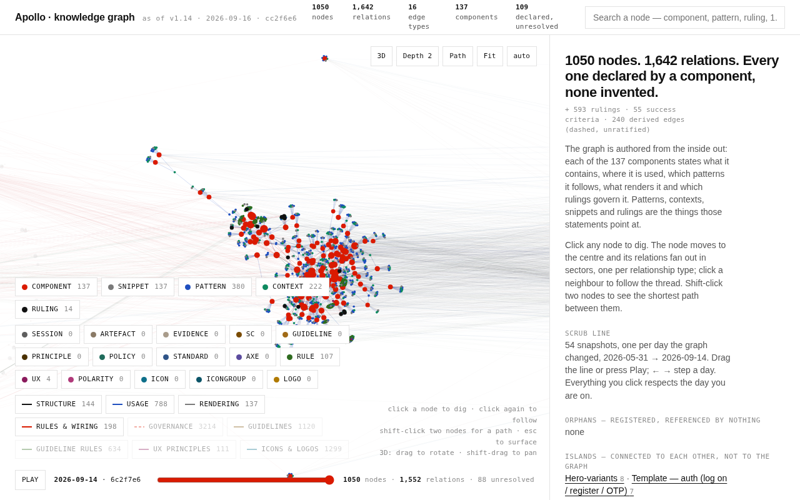
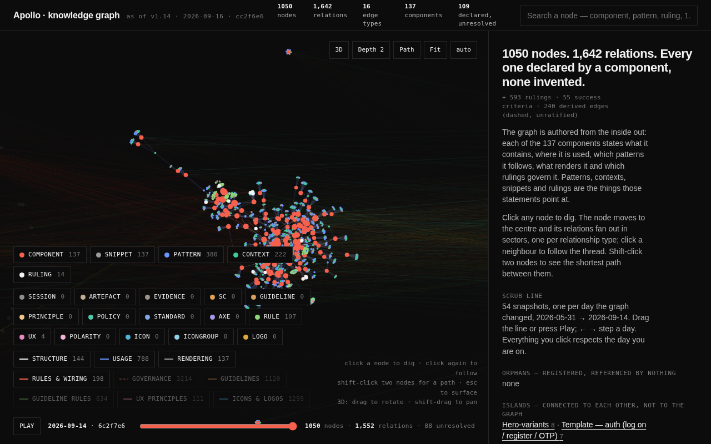
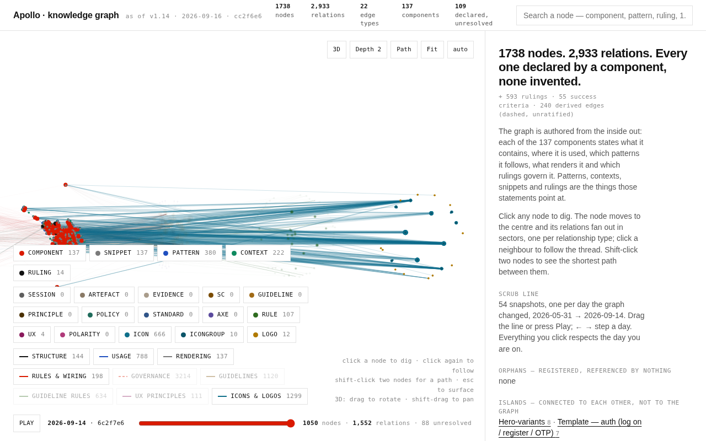
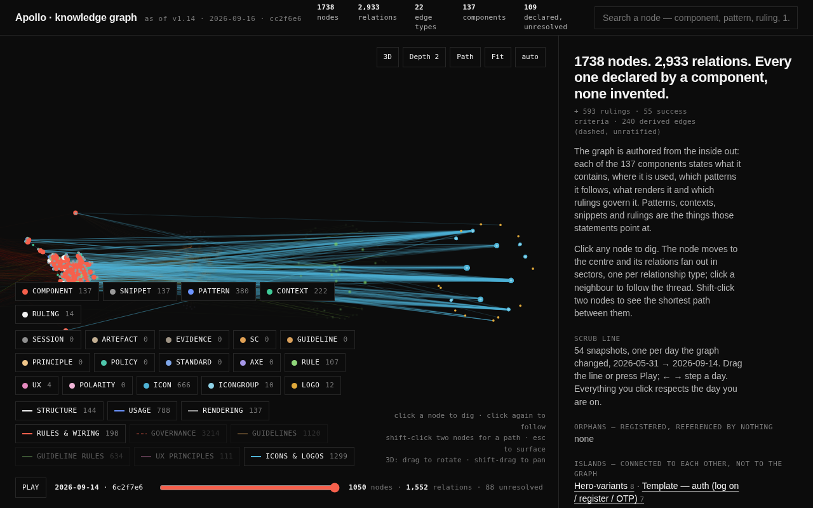

<meta charset="utf-8"><meta name="viewport" content="width=device-width,initial-scale=1">
<title>Icons and logos into the graph — #277 lane RI</title>
<style>
:root{
 --accent:#DA1A00; --ink:#000; --paper:#fff;
 --g1:#F3F3F3; --g2:#EDEDED; --g3:#D7D8D6; --g6:#767676; --g7:#545454; --g8:#333;
 --rule:#EDEDED; --soft:#F3F3F3; --muted:#545454;
 --max:1200px;
 --s1:.5rem; --s2:1rem; --s3:1.5rem; --s4:2rem; --s5:3rem; --s6:4rem; --s7:6rem;
 --font:"Univers Next for HSBC","Univers Next","Helvetica Neue",Helvetica,Arial,sans-serif;
 color-scheme:light;
}
@media (prefers-color-scheme:dark){
 :root:not([data-theme="light"]){
  --accent:#F6604C; --ink:#F2F2F2; --paper:#111;
  --g1:#1A1A1A; --g2:#2A2A2A; --g3:#3A3A3A; --g6:#9B9B9B; --g7:#B7B7B7; --g8:#D7D8D6;
  --rule:#2A2A2A; --soft:#1A1A1A; --muted:#B7B7B7; color-scheme:dark;
 }
}
:root[data-theme="dark"]{
 --accent:#F6604C; --ink:#F2F2F2; --paper:#111;
 --g1:#1A1A1A; --g2:#2A2A2A; --g3:#3A3A3A; --g6:#9B9B9B; --g7:#B7B7B7; --g8:#D7D8D6;
 --rule:#2A2A2A; --soft:#1A1A1A; --muted:#B7B7B7; color-scheme:dark;
}
*{box-sizing:border-box}
body{margin:0;background:var(--paper);color:var(--ink);font-family:var(--font);
 font-size:1rem;line-height:1.7;-webkit-font-smoothing:antialiased}
.wrap{max-width:var(--max);margin:0 auto;padding-left:var(--s4);padding-right:var(--s4)}
@media (max-width:520px){.wrap{padding-left:var(--s2);padding-right:var(--s2)}}
section{padding-block:var(--s6);border-top:1px solid var(--rule)}
section:first-of-type{border-top:0}
.label{font-size:.8125rem;font-weight:500;letter-spacing:.14em;line-height:1.6;
 color:var(--accent);display:flex;align-items:center;gap:var(--s1);margin:0 0 var(--s3)}
.label::before{content:"";display:inline-block;width:20px;height:1px;background:var(--accent);flex:0 0 20px}
h1{font-size:3.5625rem;line-height:1.18;font-weight:400;letter-spacing:0;margin:0 0 var(--s4);max-width:22ch}
h2{font-size:2.125rem;line-height:1.25;font-weight:400;margin:0 0 var(--s3)}
h3{font-size:1.1875rem;line-height:1.35;font-weight:500;margin:0}
p{margin:0 0 var(--s2);max-width:78ch}
code{font-family:ui-monospace,SFMono-Regular,Menlo,monospace;font-size:.86em;
 background:var(--soft);padding:.08em .3em;border-radius:2px;
 overflow-wrap:anywhere;word-break:break-word}
a{color:var(--accent)}
@media (max-width:760px){h1{font-size:2.125rem}h2{font-size:1.6rem}}
.stats{display:grid;grid-template-columns:repeat(4,1fr);gap:1px;background:var(--g2);
 border:1px solid var(--g2);margin:var(--s5) 0 var(--s4)}
.stat{background:var(--paper);padding:var(--s3);min-width:0}
.stat b{display:block;font-size:2.6875rem;font-weight:200;line-height:1.25;
 font-variant-numeric:tabular-nums;margin-bottom:var(--s1);overflow-wrap:anywhere}
.stat span{display:block;font-size:.8125rem;letter-spacing:.06em;line-height:1.5;color:var(--g6)}
@media (max-width:760px){.stats{grid-template-columns:repeat(2,1fr)}.stat b{font-size:1.875rem}}
@media (max-width:520px){.stats{grid-template-columns:1fr}}
.zeros{display:grid;grid-template-columns:repeat(4,1fr);gap:var(--s3);margin-top:var(--s4)}
.zeros div{border-top:1px solid var(--g3);padding-top:var(--s1);font-size:.875rem;color:var(--muted)}
.zeros b{color:var(--ink);font-weight:500}
@media (max-width:900px){.zeros{grid-template-columns:repeat(2,1fr)}}
@media (max-width:480px){.zeros{grid-template-columns:1fr}}
.dec{border-top:1px solid var(--g3);padding-top:var(--s3);margin-top:var(--s5)}
.dec:first-of-type{margin-top:var(--s3)}
.dechead{display:flex;flex-wrap:wrap;align-items:baseline;gap:var(--s2);margin-bottom:var(--s2)}
.decid{font-size:.8125rem;letter-spacing:.14em;line-height:1.6;font-weight:500;color:var(--accent)}
.onefig{display:flex;flex-wrap:wrap;align-items:baseline;gap:var(--s2);
 border-left:2px solid var(--accent);padding:var(--s1) 0 var(--s1) var(--s3);margin:var(--s3) 0}
.onefig b{font-size:2.6875rem;font-weight:200;line-height:1.32;font-variant-numeric:tabular-nums}
.onefig span{font-size:.875rem;color:var(--muted);max-width:44ch}
@media (max-width:760px){.onefig b{font-size:1.875rem}}
.opts{list-style:none;margin:var(--s3) 0 0;padding:0}
.opts li{border-top:1px solid var(--rule);padding:var(--s2) 0}
.opt{display:grid;grid-template-columns:auto 1fr;gap:var(--s2);align-items:start}
.opt input{margin-top:.45rem;accent-color:var(--accent);width:16px;height:16px;flex:0 0 16px}
.opt label{cursor:pointer;max-width:78ch}
.okey{font-weight:500;letter-spacing:.06em;font-size:.8125rem;color:var(--g6);margin-right:var(--s1)}
.rec{display:inline-block;font-size:.75rem;letter-spacing:.1em;line-height:1.5;
 font-weight:500;color:var(--accent);border:1px solid var(--accent);padding:.05rem .4rem;
 border-radius:2px;margin-right:var(--s1);white-space:nowrap}
.why{border-top:1px solid var(--rule);margin-top:var(--s2);padding-top:var(--s2);
 font-size:.875rem;color:var(--muted)}
.attrib{font-size:.8125rem;line-height:1.6;color:var(--g6);margin:0 0 var(--s2);max-width:78ch}
.flag{border-top:1px solid var(--g3);padding-top:var(--s3);margin-top:var(--s5)}
.flag h3{margin-bottom:var(--s1)}
.flagline{font-size:.875rem;color:var(--muted);max-width:78ch}
textarea{width:100%;max-width:100%;font:inherit;font-size:.875rem;margin-top:var(--s2);
 padding:var(--s1) var(--s2);border:1px solid var(--g3);background:var(--paper);
 color:var(--ink);border-radius:2px;resize:vertical;min-height:2.6rem}
textarea:focus,button:focus-visible,input:focus-visible{outline:2px solid var(--accent);outline-offset:2px}
.bar{display:flex;flex-wrap:wrap;gap:var(--s2);align-items:center;margin-top:var(--s5);
 border-top:1px solid var(--g3);padding-top:var(--s3)}
button{font:inherit;font-size:.875rem;letter-spacing:.04em;padding:.5rem 1rem;cursor:pointer;
 background:var(--paper);color:var(--ink);border:1px solid var(--ink);border-radius:2px}
button:hover{background:var(--ink);color:var(--paper)}
button.ghost{border-color:var(--g3);color:var(--muted)}
.said{font-size:.8125rem;color:var(--g6)}
pre.exp{white-space:pre-wrap;word-break:break-word;background:var(--soft);border:1px solid var(--g2);
 padding:var(--s2);font-size:.8125rem;max-height:20rem;overflow:auto;margin-top:var(--s2)}
.tw{overflow-x:auto;-webkit-overflow-scrolling:touch;margin-top:var(--s3);border-top:1px solid var(--g3)}
table{border-collapse:collapse;width:100%;font-size:.875rem;min-width:680px}
th,td{text-align:left;padding:.5rem .75rem;border-bottom:1px solid var(--rule);vertical-align:top}
th{font-size:.75rem;letter-spacing:.08em;line-height:1.6;color:var(--g6);font-weight:500;white-space:nowrap}
td.num,th.num{text-align:right;font-variant-numeric:tabular-nums;white-space:nowrap}
.slug{font-family:ui-monospace,SFMono-Regular,Menlo,monospace;font-size:.82rem;white-space:nowrap}
.newmark{color:var(--accent);font-weight:500}
.defn{font-size:.8125rem;color:var(--muted);max-width:52ch}
blockquote{margin:var(--s3) 0;padding-left:var(--s3);border-left:2px solid var(--accent);
 font-size:1.0625rem;max-width:70ch}
blockquote cite{display:block;font-size:.8125rem;font-style:normal;color:var(--g6);margin-top:var(--s1)}
footer{border-top:1px solid var(--g3);padding-block:var(--s5);font-size:.8125rem;color:var(--muted)}

/* ---- R1: the sheet. 46 live glyphs on the RI-3 card, so (c) has something to look at. */
.sheet{border:1px solid var(--g3);margin:var(--s3) 0 var(--s2);padding:var(--s3);background:var(--g1)}
.sheetlede,.sheetnote{font-size:.875rem;color:var(--muted);max-width:74ch;margin:0 0 var(--s3)}
.sheetnote{margin:var(--s2) 0 0;border-top:1px solid var(--g3);padding-top:var(--s2)}
.srow{border-top:1px solid var(--g3);padding:var(--s2) 0}
.srow:first-of-type{border-top:0;padding-top:0}
.shead{display:flex;flex-wrap:wrap;align-items:baseline;gap:var(--s1) var(--s2);margin-bottom:var(--s2)}
.shead b{font-family:ui-monospace,SFMono-Regular,Menlo,monospace;font-size:.9rem;font-weight:500}
.shead span{font-size:.75rem;letter-spacing:.04em;color:var(--g6)}
.scells{display:flex;flex-wrap:wrap;gap:var(--s2)}
figure.gl{margin:0;width:8.5rem;max-width:calc(50% - var(--s2));display:flex;flex-direction:column;
 align-items:center;gap:.4rem;background:var(--paper);border:1px solid var(--g3);padding:var(--s2) .5rem}
figure.gl.on{border-color:var(--accent)}
figure.gl svg.g{width:72px;height:72px;display:block;color:var(--ink);flex:0 0 auto}
figure.gl figcaption{text-align:center;display:block;line-height:1.35}
.gs{display:block;font-family:ui-monospace,SFMono-Regular,Menlo,monospace;font-size:.7rem;
 color:var(--ink);overflow-wrap:anywhere}
.gn{display:block;font-size:.65rem;letter-spacing:.04em;color:var(--g6);margin-top:.2rem}
@media (max-width:520px){figure.gl{width:calc(50% - var(--s1));max-width:none}
 figure.gl svg.g{width:56px;height:56px}.scells{gap:var(--s1)}}

/* ---- A1: the two explorer renders. */
.figs{margin:var(--s3) 0 var(--s2);display:grid;grid-template-columns:1fr 1fr;gap:var(--s2)}
.figs figure{margin:0;min-width:0}
.figs img{display:block;width:100%;height:auto;border:1px solid var(--g3);background:var(--paper)}
.figs figcaption{font-size:.8125rem;line-height:1.5;color:var(--muted);margin-top:var(--s1)}
.fignote{grid-column:1/-1;font-size:.8125rem;line-height:1.6;color:var(--muted);max-width:78ch;
 border-top:1px solid var(--g3);padding-top:var(--s2);margin:var(--s1) 0 0}
@media (max-width:760px){.figs{grid-template-columns:1fr}}
.figs img.dk{display:none}
@media (prefers-color-scheme:dark){:root:not([data-theme="light"]) .figs img.lt{display:none}
 :root:not([data-theme="light"]) .figs img.dk{display:block}}
:root[data-theme="dark"] .figs img.lt{display:none}
:root[data-theme="dark"] .figs img.dk{display:block}
</style>
<script type="application/json" id="measured">{"n_icons": 666, "n_groups": 10, "n_logos": 12, "n_nodes": 688, "n_edges": 1299, "n_ingroup": 666, "n_avo": 232, "n_orphan": 2, "n_usesicon": 371, "n_useslogo": 18, "n_defaultfor": 2, "n_ruledby": 8, "n_usescomp": 105, "n_usesicons": 81, "n_unused": 585, "n_active": 234, "n_multi": 15, "n_extra": 16, "n_isolated": 170, "n_nulls": 32, "n_unbound": 10, "logo_rules": 0, "logo_rulings": 0, "logo_kb": 6.3, "lib_keys": 758, "snip_files": 137, "unmatched": 102, "sprites": 835, "payload_kb": "348", "explorer_kb": "2,825", "payload_pct": 12.32, "g_nodes": "3,897", "g_edges": "6,721", "node_pct": 17.7, "edge_pct": 19.3, "prose_hit": 137, "prose_metas": 137, "prose_pairs": "1,947", "struct_only": 32, "prose_only": 13, "say_icon": 86, "cc": 613, "baked": 53, "tokens_icon": 29, "manifest_date": "2026-06-17", "chip": "assets", "n_sheet_actives": 31, "n_sheet_glyphs": 46}</script>
<section id="headline"><div class="wrap">
<p class="label">#277 &middot; lane RI &middot; icons and logos, proposed</p>
<h1>688 new nodes, 1299 new edges, and four questions.</h1>
<p>Four decisions sit below, recommendation first on each, one figure on each card. Everything after
them is the evidence they rest on and you should not need it. <b>If you take the recommendation on all
four, the graph gains 688 nodes and 1299 edges</b> &mdash; that is
<b>+17.7%</b> on the node count and <b>+19.3%</b> on the edge count of a graph
that holds 3,897 and 6,721 today. Nothing here is landed and nothing under
<code>knowledge/</code> has been written.</p>
<div class="stats">
<div class="stat"><b>688</b><span>nodes: 666 icons, 10 groups, 12 logos</span></div>
<div class="stat"><b>1299</b><span>edges across six new types, all structural</span></div>
<div class="stat"><b>0</b><span>edges drawn from a regex over prose</span></div>
<div class="stat"><b>32</b><span>declared nulls &mdash; every gap named, none filled</span></div>
</div>
<div class="zeros">
<div><b>0</b> files written under <code>knowledge/</code> &mdash; this page proposes</div>
<div><b>0</b> node kinds invented to make an arrow land</div>
<div><b>81</b> of 666 icons are used by anything &mdash; 585 are not</div>
<div><b>137 of 137</b> metas the refused prose route fires on</div>
</div>
<blockquote>use this as teh default logo &ldquo;masterbrand-light-colour&rdquo; &hellip; use this for dark
mode masterbrand-dark-colour
<cite>Dave, #230, 2026-08-31 &mdash; quoted from the <code>says</code> field of <code>s230-D2</code> in
knowledge/_rulings.json. It is the only ruling that binds a logo, and it binds two of 12.</cite></blockquote>
</div></section>

<section id="decisions"><div class="wrap">
<p class="label">Your words &middot; the ask</p>
<h2>Four decisions.</h2>
<p>One letter is an answer; a letter with a sentence attached is a sequel, and it will be read back
before anything is built on it. Every recommendation below says which lane wrote it, where it sits.</p>
<div class="dec" data-id="RI-1">
<div class="dechead"><span class="decid">RI-1</span><h3>Do the icons enter as icons AND groups, as the icons alone, or not yet?</h3></div>
<div class="onefig"><b>688</b><span>nodes if all three kinds enter — and 170 icons that would carry no edge at all without the 10 group hubs</span></div>
<p>The manifest holds 666 glyphs under 10 group keys, and there are 12 logo lockups. All three kinds together are <b>688 nodes</b>. The group hubs are not decoration: without them, <b>170 icons carry no edge at all</b> — they have no active twin, no ruling, and no component renders them — and the family arrives as a fog of dots. With <code>inGroup</code>, every one of the 666 has at least one edge and the family has ten legible hubs.</p>
<ul class="opts">
<li><div class="opt"><input type="radio" name="RI-1" id="RI-1-a" value="a"><label for="RI-1-a"><span class="okey">(a)</span><span class="rec">Recommended</span>All three kinds — 666 <code>icon:</code> + 10 <code>iconGroup:</code> + 12 <code>logo:</code> = <b>688 nodes</b>.</label></div></li>
<li><div class="opt"><input type="radio" name="RI-1" id="RI-1-b" value="b"><label for="RI-1-b"><span class="okey">(b)</span>Icons only — 666 <code>icon:</code> nodes, no group hubs. 170 of them arrive with no edge at all.</label></div></li>
<li><div class="opt"><input type="radio" name="RI-1" id="RI-1-c" value="c"><label for="RI-1-c"><span class="okey">(c)</span>Groups only — the 10 hubs, and nothing hanging off them.</label></div></li>
<li><div class="opt"><input type="radio" name="RI-1" id="RI-1-d" value="d"><label for="RI-1-d"><span class="okey">(d)</span>Not yet. Nothing enters; the proposal stays on the shelf.</label></div></li>
<li><div class="opt"><input type="radio" name="RI-1" id="RI-1-none" value=""><label for="RI-1-none"><span class="okey">(&mdash;)</span>No choice yet &mdash; clear this decision.</label></div></li>
</ul>
<p class="why"><b>Recommendation.</b> Take (a). The ten hubs cost 10 nodes and 666 edges and they are the difference between a navigable family and 170 unreachable dots. The payload is measured, not estimated: 348 KB against the explorer's 2,825 KB, <b>+12.32%</b> on bytes and <b>+17.7%</b> on node count. That last number is a look, not an argument — judge it on the two explorer renders at the foot of this card, which are the graph today and the graph with this family's chip on. If it is too much, (d) costs nothing.</p>
<p class="attrib">Lane RI wrote this recommendation, re-deriving every figure from icons.manifest.json and the live tree. Lane IX (#277, ca294b4) costed the same three options first and reached the same place. The two renders below were made by lane RIF (#277) in a scratch copy of the explorer; <code>notes/_KG-EXPLORER.html</code> was not rebuilt.</p>
<div class="figs" id="RI-1-renders"><figure><figcaption><b>Chip off.</b> The graph today &mdash; the base wiring, unchanged.</figcaption></figure><figure><figcaption><b>Chip on.</b> The same view with <code>Icons &amp; logos</code> lit.</figcaption></figure><p class="fignote"><b>How these were made, and what they are not.</b> Lane RIF copied <code>_build_kg_explorer.py</code> and its template to a scratch directory, pointed the copy at a scratch output, and fed it this lane&rsquo;s own <code>_icon_nodes.json</code> / <code>_logo_nodes.json</code>. <code>notes/_KG-EXPLORER.html</code> was not rebuilt and nothing under <code>knowledge/</code> was written. The new family is parked in its own column, and the column it sits in is lane RIF&rsquo;s layout choice, not a measurement &mdash; the squeeze on the left is the cost of that choice as much as of the family. What IS measured is the strip at the top of each render: the same view reads <b>1050 nodes / 1,642 relations</b> with the chip off and <b>1738 / 2,933</b> with it on.</p></div>
<textarea class="note" data-id="RI-1" aria-label="Notes for RI-1" placeholder="Notes for RI-1 &mdash; your words"></textarea>
</div><div class="dec" data-id="RI-2">
<div class="dechead"><span class="decid">RI-2</span><h3>Draw component → icon from the geometry byte-match?</h3></div>
<div class="onefig"><b>371</b><span>component&nbsp;&rarr;&nbsp;icon edges from the byte-match, against 1,947 pairs the prose route would have invented</span></div>
<p>There are two routes and they are not close. The <b>byte-match</b> compares every inline <code>&lt;path d&gt;</code> in every reference snippet against the 758 distinct normalised path keys in the library, using <code>_validate_icons.py</code>'s own <code>norm()</code> — the gate that already polices icon sources. It finds <b>371 pairs across 105 components and 81 icons</b>, and resolves every one to a manifest slug. The <b>prose</b> route — the slug as a word in the meta — fires on <b>137 of 137 metas</b> and makes <b>1,947 pairs</b>, because <code>accessibility</code>, <code>no</code>, <code>time</code>, <code>user</code>, <code>card</code> and <code>block</code> are all icon slugs.</p>
<ul class="opts">
<li><div class="opt"><input type="radio" name="RI-2" id="RI-2-a" value="a"><label for="RI-2-a"><span class="okey">(a)</span><span class="rec">Recommended</span>Draw it as <code>usesIcon</code> — 371 edges, from the byte-match, with the four limits attached.</label></div></li>
<li><div class="opt"><input type="radio" name="RI-2" id="RI-2-b" value="b"><label for="RI-2-b"><span class="okey">(b)</span>Wait. The icons enter as nodes; no component→icon edge is drawn in this wave.</label></div></li>
<li><div class="opt"><input type="radio" name="RI-2" id="RI-2-none" value=""><label for="RI-2-none"><span class="okey">(&mdash;)</span>No choice yet &mdash; clear this decision.</label></div></li>
</ul>
<p class="why"><b>Recommendation.</b> Take (a). The number that settles it is not 371 against 1,947; it is <b>32</b>: that many components render a library glyph and never once say the word “icon” in their meta. The prose route would have missed every one of them while inventing 1,947 pairs of English. Four limits travel with the edge and are written into the schema text: it measures the reference snippet and not the contract (so it is <code>usesIcon</code>, never <code>requiresIcon</code>); 81 of 666 icons are used, so it lights up a twelfth of the family; 102 inline paths match nothing and get no edge; and sprite <code>&lt;use&gt;</code> refs mean the pair set is right but per-use frequency is not measured, so no weight goes on the edge.</p>
<p class="attrib">Lane RI wrote this recommendation and re-derived the byte-match independently from the gate's own norm()/DRE. Lane IX found the route and the 32 figure first; s274-D12 and s276-D5 are the refusals the prose route runs into.</p>

<textarea class="note" data-id="RI-2" aria-label="Notes for RI-2" placeholder="Notes for RI-2 &mdash; your words"></textarea>
</div><div class="dec" data-id="RI-3">
<div class="dechead"><span class="decid">RI-3</span><h3>Fifteen bases have two or three “active” glyphs. Is the bare one the default?</h3></div>
<div class="onefig"><b>15</b><span>bases with two or three “active” drawings that share ONE Figma name — the <code>-2</code>/<code>-3</code> suffix is <code>_export-icons.py</code>&rsquo;s collision counter, so the bare slug is Figma&rsquo;s enumeration order, not a design choice</span></div>
<p><code>active</code> is a boolean on all 666 records and it is <b>exactly</b> predicted by the slug — 234 records end <code>-active</code> or <code>-active-N</code>, with zero mismatches either way. 15 bases carry more than one: <code>dentist</code> has three, fourteen others have two. <code>activeVariantOf</code> draws all 232 twins whichever way this goes, so nothing is blocked. What is open is whether one of them is <i>the</i> active twin.</p>
<ul class="opts">
<li><div class="opt"><input type="radio" name="RI-3" id="RI-3-a" value="a"><label for="RI-3-a"><span class="okey">(a)</span>The bare <code>-active</code> is the default, by rule — the status quo the gate already enforces. The 16 <code>-active-2</code>/<code>-active-3</code> records enter as declared variants.</label></div></li>
<li><div class="opt"><input type="radio" name="RI-3" id="RI-3-b" value="b"><label for="RI-3-b"><span class="okey">(b)</span>Leave it open. Draw the 232 twins, draw no <code>defaultActive</code>, and the 15 stay a declared null.</label></div></li>
<li><div class="opt"><input type="radio" name="RI-3" id="RI-3-c" value="c"><label for="RI-3-c"><span class="okey">(c)</span><span class="rec">Recommended</span><b>I'll pick.</b> The 31 active drawings are on the sheet at the foot of this card, each beside its base — I look, and I name the 15 defaults myself. <code>defaultActive</code> waits for that list.</label></div></li>
<li><div class="opt"><input type="radio" name="RI-3" id="RI-3-none" value=""><label for="RI-3-none"><span class="okey">(&mdash;)</span>No choice yet &mdash; clear this decision.</label></div></li>
</ul>
<p class="why"><b>Recommendation.</b> <b>Take (c), and it will take you five minutes.</b> Lane RIV's correction was “nobody has looked”. Lane RIF built the sheet below and looked, and the bare <code>-active</code> is <b>not</b> the active twin on at least six of the 15: <code>dentist-active</code> is a price tag (the filled tooth is <code>-active-2</code>), <code>renew-active</code> is a stack of lines, <code>user-staff-active</code> is a droplet with a bolt, <code>employee-banking-solution-active</code> is a video camera, <code>reward-active</code> is a shopping bag, <code>withdraw-overpayment-active</code> is a padlock. <code>contact-chat-ai</code> and <code>financial-health-check</code> look wrong too. That is an eye on a sheet, not a measurement — which is exactly why it is yours: scroll down and you can confirm or overturn every one of those eight in the time it takes to read this. (a) is still the safe no-op: it ratifies what <code>_validate_icons.py</code> already enforces (<code>active_names()</code> returns <code>slug + "-active"</code>) and <b>none of these 31 glyphs is used by any snippet today</b>, so nothing breaks either way — but on this evidence it would write down a default we can already see is wrong on half the set. (b) leaves it open and costs nothing.</p>
<p class="attrib">Lane RI wrote (a) and (b) and marked (a) Recommended. Lane RIV (#277, edd33fc) ruled that the evidence for (a) — “all fifteen have a bare <code>-active</code>” — is <code>_export-icons.py</code>'s slug-collision counter (:113-118), not a design signal, and restored (c). Lane RIF built the sheet, looked at it, and moved Recommended from (a) to (c) on what it shows; the six named bases are lane RIF's reading of the drawings on this page and nothing else. Lane IX flagged the ambiguity as blocker B4 and left it yours, which it still is.</p>
<div class="sheet" id="RI-3-sheet"><p class="sheetlede"><b>The sheet.</b> 46 drawings: the 31 active glyphs of the 15 bases, each beside its inactive base. They are the live files under <code>knowledge/assets/icons/</code>, inlined, unretouched. The caption under each one says what option (a) would do with it &mdash; it is not a claim that (a) is right.</p><div class="srow"><div class="shead"><b>alert</b><span>2 active drawings, one manifest name: &ldquo;Alert Active&rdquo; &middot; informative</span></div><div class="scells"><figure class="gl off"><svg class="g" role="img" aria-label="alert" focusable="false" viewBox="0 0 18 18" fill="none" xmlns="http://www.w3.org/2000/svg">
<path fill-rule="evenodd" clip-rule="evenodd" d="M17.2931 13.293L15.0001 11V6.252C15.0001 2.967 12.4681 0.102 9.18507 0.003C9.12307 0.001 9.06107 0 9.00007 0C5.68607 0 3.00007 2.686 3.00007 6V11L0.707069 13.293C0.0770694 13.923 0.523069 15 1.41407 15H6.56207C6.52707 15.162 6.50007 15.327 6.50007 15.5C6.50007 16.881 7.61907 18 9.00007 18C10.3811 18 11.5001 16.881 11.5001 15.5C11.5001 15.327 11.4731 15.162 11.4381 15H16.5861C17.4771 15 17.9231 13.923 17.2931 13.293ZM10.3001 15.5C10.3001 16.217 9.71707 16.8 9.00007 16.8C8.28307 16.8 7.70007 16.217 7.70007 15.5C7.70007 15.319 7.74907 15.154 7.81907 15H10.1821C10.2511 15.154 10.3001 15.319 10.3001 15.5ZM1.89707 13.8L3.84807 11.848L4.20007 11.497V6C4.20007 3.353 6.35307 1.2 9.00007 1.2L9.14807 1.202C11.7131 1.279 13.8001 3.544 13.8001 6.252V11.497L14.1521 11.848L16.1041 13.8H1.89707Z" fill="currentColor"/>
</svg><figcaption><span class="gs">alert</span><span class="gn">inactive &mdash; the base</span></figcaption></figure><figure class="gl on"><svg class="g" role="img" aria-label="alert-active" focusable="false" viewBox="0 0 18 18" fill="none" xmlns="http://www.w3.org/2000/svg">
<path fill-rule="evenodd" clip-rule="evenodd" d="M9.00007 18C10.3811 18 11.5001 16.881 11.5001 15.5H6.50007C6.50007 16.881 7.61907 18 9.00007 18ZM17.2931 12.293L15.0001 10V6.251C15.0001 2.966 12.4681 0.101 9.18507 0.002C9.12307 0.001 9.06107 0 9.00007 0C5.68607 0 3.00007 2.686 3.00007 6V10L0.707069 12.293C0.0770694 12.923 0.523069 14 1.41407 14H16.5861C17.4771 14 17.9231 12.923 17.2931 12.293Z" fill="currentColor"/>
</svg><figcaption><span class="gs">alert-active</span><span class="gn">bare slug &mdash; what (a) picks</span></figcaption></figure><figure class="gl on"><svg class="g" role="img" aria-label="alert-active-2" focusable="false" viewBox="0 0 18 18" fill="none" xmlns="http://www.w3.org/2000/svg">
<g clip-path="url(#alert-active-2-clip0_15715_7744)">
<path d="M5 8C2.24 8 0 10.24 0 13C0 15.76 2.24 18 5 18C7.76 18 10 15.76 10 13C10 10.24 7.76 8 5 8ZM7.48 13.68H5.65V15.51H4.15V13.68H2.32V12.18H4.15V10.35H5.65V12.18H7.48V13.68ZM17.17 12.5H12.88C12.9 12.63 12.93 12.77 12.93 12.92C12.93 13.95 12.17 14.81 11.19 14.97C11.39 14.35 11.5 13.69 11.5 13C11.5 9.71 9.03 6.97 5.84 6.56V5C5.84 2.24 8.08 0 10.84 0H11C13.73 0.08 15.84 2.47 15.84 5.21V9.17L17.75 11.08C18.28 11.6 17.91 12.5 17.17 12.5Z" fill="currentColor"/>
</g>
<defs>
<clipPath id="alert-active-2-clip0_15715_7744">
<rect width="18" height="18" fill="white"/>
</clipPath>
</defs>
</svg><figcaption><span class="gs">alert-active-2</span><span class="gn">declared variant under (a)</span></figcaption></figure></div></div><div class="srow"><div class="shead"><b>contact-chat-ai</b><span>2 active drawings, one manifest name: &ldquo;Contact chat AI Active&rdquo; &middot; media</span></div><div class="scells"><figure class="gl off"><svg class="g" role="img" aria-label="contact-chat-ai" focusable="false" viewBox="0 0 18 18" fill="none" xmlns="http://www.w3.org/2000/svg">
<path fill-rule="evenodd" clip-rule="evenodd" d="M6 6C6.552 6 7 5.552 7 5C7 4.448 6.552 4 6 4C5.448 4 5 4.448 5 5C5 5.552 5.448 6 6 6ZM12 6C12.552 6 13 5.552 13 5C13 4.448 12.552 4 12 4C11.448 4 11 4.448 11 5C11 5.552 11.448 6 12 6ZM0 0V18L4 14H18V0H0ZM16.8 12.8H3.503L3.151 13.151L1.2 15.103V1.2H16.8V12.8ZM6 9.474C6.838 10.109 7.87 10.5 9 10.5C10.13 10.5 11.162 10.109 12 9.474V8.118C11.266 8.958 10.2 9.5 9 9.5C7.8 9.5 6.734 8.958 6 8.118V9.474Z" fill="currentColor"/>
</svg><figcaption><span class="gs">contact-chat-ai</span><span class="gn">inactive &mdash; the base</span></figcaption></figure><figure class="gl on"><svg class="g" role="img" aria-label="contact-chat-ai-active" focusable="false" viewBox="0 0 18 18" fill="none" xmlns="http://www.w3.org/2000/svg">
<path d="M0 0V18L4 14H18V0H0ZM9.95 10.51C9.95 11.04 9.52 11.46 9 11.46C8.48 11.46 8.05 11.03 8.05 10.51C8.05 9.99 8.48 9.56 9 9.56C9.52 9.56 9.95 9.99 9.95 10.51ZM10.7 6.93L9.86 7.78C9.76 7.88 9.76 7.9 9.76 7.95V8.99H8.25V7.95C8.25 7.33 8.56 6.95 8.79 6.71L9.64 5.86C9.85 5.65 9.94 5.37 9.89 5.07C9.83 4.72 9.55 4.43 9.21 4.35C8.93 4.29 8.66 4.35 8.45 4.53C8.24 4.7 8.12 4.95 8.12 5.22V5.53H6.61V5.22C6.61 4.49 6.93 3.81 7.5 3.35C8.07 2.89 8.81 2.71 9.53 2.86C10.49 3.06 11.24 3.84 11.4 4.81C11.53 5.59 11.28 6.36 10.73 6.91L10.7 6.93Z" fill="currentColor"/>
</svg><figcaption><span class="gs">contact-chat-ai-active</span><span class="gn">bare slug &mdash; what (a) picks</span></figcaption></figure><figure class="gl on"><svg class="g" role="img" aria-label="contact-chat-ai-active-2" focusable="false" viewBox="0 0 18 18" fill="none" xmlns="http://www.w3.org/2000/svg">
<path fill-rule="evenodd" clip-rule="evenodd" d="M0 0V18L4 14H18V0H0ZM5 5C5 4.448 5.448 4 6 4C6.552 4 7 4.448 7 5C7 5.552 6.552 6 6 6C5.448 6 5 5.552 5 5ZM12 9.797C11.148 10.394 10.117 10.75 9 10.75C7.883 10.75 6.852 10.394 6 9.797V7.727C6.684 8.646 7.769 9.25 9 9.25C10.231 9.25 11.316 8.646 12 7.727V9.797ZM12 6C11.448 6 11 5.552 11 5C11 4.448 11.448 4 12 4C12.552 4 13 4.448 13 5C13 5.552 12.552 6 12 6Z" fill="currentColor"/>
</svg><figcaption><span class="gs">contact-chat-ai-active-2</span><span class="gn">declared variant under (a)</span></figcaption></figure></div></div><div class="srow"><div class="shead"><b>dentist</b><span>3 active drawings, one manifest name: &ldquo;Dentist Active&rdquo; &middot; informative</span></div><div class="scells"><figure class="gl off"><svg class="g" role="img" aria-label="dentist" focusable="false" viewBox="0 0 18 18" fill="none" xmlns="http://www.w3.org/2000/svg">
<g clip-path="url(#dentist-clip0_13360_7967)">
<path d="M11.9694 1.20067C12.4296 1.20067 12.7998 1.34074 13.7404 1.90106H13.7604L13.7804 1.93107C14.9911 2.57143 15.6714 4.61256 15.3713 6.68371C15.1111 7.7343 14.851 8.44469 14.5108 9.04502L14.4808 9.09505L14.4608 9.15509C14.0505 10.0956 13.6603 10.9761 13.6603 12.8671C13.6603 15.6287 12.6698 16.8093 12.2695 16.8093C11.8293 16.8093 11.289 15.3986 10.6687 13.7777L10.5786 13.5475C10.3785 13.0372 9.99828 12.0867 8.99772 12.0867C7.99717 12.0867 7.61696 13.0372 7.41684 13.5675L7.3368 13.7877C6.71646 15.4186 6.17616 16.8193 5.73591 16.8193C5.33569 16.8193 4.33513 15.6487 4.34514 12.8772C4.34514 10.9861 3.96493 10.1056 3.54469 9.16509L3.52468 9.10506L3.49467 9.05503C3.15448 8.4547 2.89433 7.7443 2.63419 6.69372C2.33402 4.62257 3.0144 2.59144 4.22507 1.94108H4.24508L4.26509 1.91106C5.20562 1.35075 5.57582 1.21067 6.03608 1.21067C6.4363 1.21067 6.98661 1.32073 7.91712 1.59088C8.38738 1.73096 8.74758 1.801 8.99772 1.801C9.24786 1.801 9.60806 1.73096 10.0683 1.59088C11.0088 1.32073 11.5591 1.20067 11.9594 1.20067M11.9694 0C11.3991 0 10.7287 0.150083 9.74814 0.430239C9.74814 0.430239 9.21785 0.590328 9.01773 0.590328C8.81762 0.590328 8.28733 0.430239 8.28733 0.430239C7.28677 0.150083 6.6164 0 6.04608 0C5.25564 0 4.65531 0.280156 3.66476 0.870484C1.96381 1.77098 1.06331 4.29238 1.45353 6.91384C1.7537 8.12451 2.05387 8.93496 2.45409 9.63535C2.85431 10.5459 3.15448 11.2462 3.14447 12.8571C3.14447 16.179 4.43519 18 5.73591 18C7.03663 18 7.53691 16.5892 8.53747 13.9778C8.72757 13.5075 8.85765 13.2674 8.99772 13.2674C9.1378 13.2674 9.27788 13.5075 9.45798 13.9778C10.4585 16.5892 10.9688 18 12.2595 18C13.5603 18 14.861 16.179 14.851 12.8571C14.851 11.2462 15.1511 10.5359 15.5414 9.63535C15.9416 8.92496 16.2417 8.12451 16.5419 6.91384C16.9421 4.29238 16.0316 1.78099 14.3307 0.870484C13.3601 0.280156 12.7598 0 11.9694 0Z" fill="currentColor"/>
</g>
<defs>
<clipPath id="dentist-clip0_13360_7967">
<rect width="18" height="18.0001" fill="white"/>
</clipPath>
</defs>
</svg><figcaption><span class="gs">dentist</span><span class="gn">inactive &mdash; the base</span></figcaption></figure><figure class="gl on"><svg class="g" role="img" aria-label="dentist-active" focusable="false" viewBox="0 0 18 18" fill="none" xmlns="http://www.w3.org/2000/svg">
<path d="M16.2052 8.67L8.56516 16.31L2.63516 10.36L1.78516 11.21L8.57516 18L16.2152 10.36V8.66L16.2052 8.67ZM16.2052 0H9.42516L1.78516 7.64L8.57516 14.43L16.2152 6.79V0H16.2052ZM12.6752 4.95C12.2852 5.34 11.6552 5.34 11.2652 4.95C10.8752 4.56 10.8752 3.93 11.2652 3.54C11.6552 3.15 12.2852 3.15 12.6752 3.54C13.0652 3.93 13.0652 4.56 12.6752 4.95Z" fill="currentColor"/>
</svg><figcaption><span class="gs">dentist-active</span><span class="gn">bare slug &mdash; what (a) picks</span></figcaption></figure><figure class="gl on"><svg class="g" role="img" aria-label="dentist-active-2" focusable="false" viewBox="0 0 18 18" fill="none" xmlns="http://www.w3.org/2000/svg">
<g clip-path="url(#dentist-active-2-clip0_13360_8444)">
<path d="M11.9694 0C11.3991 0 10.7287 0.150083 9.74814 0.430239C9.74814 0.430239 9.21785 0.590328 9.01773 0.590328C8.81762 0.590328 8.28733 0.430239 8.28733 0.430239C7.28677 0.150083 6.6164 0 6.04608 0C5.25564 0 4.65531 0.280156 3.66476 0.870484C1.96381 1.77098 1.06331 4.29238 1.45353 6.91384C1.7537 8.12451 2.05387 8.93496 2.45409 9.63535C2.85431 10.5459 3.15448 11.2462 3.14447 12.8571C3.14447 16.179 4.43519 18 5.73591 18C7.03663 18 7.53691 16.5892 8.53747 13.9778C8.72757 13.5075 8.85765 13.2674 8.99772 13.2674C9.1378 13.2674 9.27788 13.5075 9.45798 13.9778C10.4585 16.5892 10.9688 18 12.2595 18C13.5603 18 14.861 16.179 14.851 12.8571C14.851 11.2462 15.1511 10.5359 15.5414 9.63535C15.9416 8.92496 16.2417 8.12451 16.5419 6.91384C16.9421 4.29238 16.0316 1.78099 14.3307 0.870484C13.3601 0.280156 12.7598 0 11.9694 0Z" fill="currentColor"/>
</g>
<defs>
<clipPath id="dentist-active-2-clip0_13360_8444">
<rect width="18" height="18.0001" fill="white"/>
</clipPath>
</defs>
</svg><figcaption><span class="gs">dentist-active-2</span><span class="gn">declared variant under (a)</span></figcaption></figure><figure class="gl on"><svg class="g" role="img" aria-label="dentist-active-3" focusable="false" viewBox="0 0 18 18" fill="none" xmlns="http://www.w3.org/2000/svg">
<g clip-path="url(#dentist-active-3-clip0_21470_5948)">
<path d="M18 8.12451V11.1062C18 11.9366 17.33 12.607 16.5 12.607H15.97C14.93 15.0484 13 16.9494 10.07 17.3196C9.88 17.7198 9.47 18 9 18C8.34 18 7.8 17.4597 7.8 16.7993C7.8 16.139 8.34 15.5987 9 15.5987C9.4 15.5987 9.74 15.8088 9.96 16.119C12.51 15.7888 13.94 14.1078 14.71 12.4669C14.17 12.2468 13.8 11.7165 13.8 11.0962V8.11451C13.8 7.29405 14.45 6.63369 15.26 6.61367C14.74 4.17232 13.23 1.19066 8.99 1.19066C4.75 1.19066 3.2 4.18232 2.68 6.62368H2.7C3.53 6.62368 4.2 7.29405 4.2 8.12451V11.1062C4.2 11.8766 3.62 12.517 2.86 12.587C2.81 12.607 2.76 12.607 2.7 12.607H1.5C0.67 12.607 0 11.9366 0 11.1062V8.12451C0 7.31406 0.64 6.6537 1.44 6.63369C2.15 2.94163 4.51 0 8.99 0C13.47 0 15.79 2.95164 16.5 6.62368C17.33 6.62368 18 7.29405 18 8.12451Z" fill="currentColor"/>
</g>
<defs>
<clipPath id="dentist-active-3-clip0_21470_5948">
<rect width="18" height="18.0001" fill="white"/>
</clipPath>
</defs>
</svg><figcaption><span class="gs">dentist-active-3</span><span class="gn">declared variant under (a)</span></figcaption></figure></div></div><div class="srow"><div class="shead"><b>e-coupon</b><span>2 active drawings, one manifest name: &ldquo;e-Coupon Active&rdquo; &middot; products-and-services</span></div><div class="scells"><figure class="gl off"><svg class="g" role="img" aria-label="e-coupon" focusable="false" viewBox="0 0 18 18" fill="none" xmlns="http://www.w3.org/2000/svg">
<path fill-rule="evenodd" clip-rule="evenodd" d="M0 10.9H0.15C1.11884 10.8002 1.85532 9.98397 1.85532 9.01C1.85532 8.03604 1.11884 7.2198 0.15 7.12H0V2.5H18V7.1C16.9958 7.12139 16.1817 7.92075 16.1419 8.92443C16.1022 9.92811 16.8506 10.7893 17.85 10.89H18V15.49H0V10.9ZM16.8 3.7H1.2V6.14C2.35324 6.62226 3.10401 7.74998 3.10401 9C3.10401 10.25 2.35324 11.3777 1.2 11.86V14.3H16.8V11.86C15.6468 11.3777 14.896 10.25 14.896 9C14.896 7.74998 15.6468 6.62226 16.8 6.14V3.7ZM9.06 6.35C10.35 6.35 10.36 7 10.36 7.22H11.56C11.56 6.11543 10.6646 5.22 9.56 5.22V3.7H8.4V5.22C7.283 5.29805 6.4129 6.22035 6.4 7.34C6.4 8.83 7.74 9.25 8.46 9.47L9.1 9.68C10.1 9.97 10.32 10.19 10.32 10.68C10.32 11.6 9.23 11.68 8.9 11.68C7.61 11.68 7.6 11.03 7.6 10.81H6.4C6.4 11.9146 7.29543 12.81 8.4 12.81V14.3H9.6V12.78C10.717 12.702 11.5871 11.7797 11.6 10.66C11.6 9.17 10.26 8.75 9.54 8.53L8.9 8.32C7.9 8.03 7.68 7.82 7.68 7.32C7.64 6.42 8.73 6.35 9.06 6.35Z" fill="currentColor"/>
</svg><figcaption><span class="gs">e-coupon</span><span class="gn">inactive &mdash; the base</span></figcaption></figure><figure class="gl on"><svg class="g" role="img" aria-label="e-coupon-active" focusable="false" viewBox="0 0 18 18" fill="none" xmlns="http://www.w3.org/2000/svg">
<path fill-rule="evenodd" clip-rule="evenodd" d="M9.75 3.5H8.25V4.597C7.056 4.856 6.291 5.687 6.291 6.837C6.291 8.441 7.755 8.896 8.454 9.113L9.09 9.316C10.042 9.612 10.21 9.797 10.21 10.164C10.21 10.918 9.32 10.999 8.937 10.999C7.801 10.999 7.794 10.478 7.791 10.281L6.291 10.303C6.307 11.451 7.044 12.226 8.25 12.436V13.5H9.75V12.404C10.944 12.145 11.709 11.314 11.709 10.163C11.709 8.562 10.251 8.105 9.546 7.888L8.904 7.684C7.959 7.39 7.791 7.205 7.79 6.836C7.79 6.082 8.68 6.001 9.063 6.001C10.199 6.001 10.206 6.523 10.209 6.72L11.709 6.698C11.693 5.55 10.956 4.775 9.75 4.565V3.5ZM18 2V6.601C16.951 6.601 16.1 7.451 16.1 8.5C16.1 9.5 16.872 10.319 17.852 10.395L18 10.4V15H0V10.4L0.148 10.395C1.128 10.319 1.9 9.5 1.9 8.5C1.9 7.501 1.128 6.682 0.148 6.606L0 6.601V2H18Z" fill="currentColor"/>
</svg><figcaption><span class="gs">e-coupon-active</span><span class="gn">bare slug &mdash; what (a) picks</span></figcaption></figure><figure class="gl on"><svg class="g" role="img" aria-label="e-coupon-active-2" focusable="false" viewBox="0 0 18 18" fill="none" xmlns="http://www.w3.org/2000/svg">
<g clip-path="url(#e-coupon-active-2-clip0_19206_6417)">
<path d="M5.33 5.94038L14.34 2.30038L17.99 3.78038L8.98 7.42038L5.32 5.94038H5.33ZM12.35 1.49038L9.01 0.140381L0 3.79038L3.33 5.14038L12.35 1.49038ZM4.59 7.26038V11.0104L3.09 10.4004V6.65038L0 5.41038V4.59038V14.5204L8.24 17.8604V8.74038L4.59 7.26038ZM9.74 8.74038V17.8604L18 14.5304V5.40038L9.74 8.74038Z" fill="currentColor"/>
</g>
<defs>
<clipPath id="e-coupon-active-2-clip0_19206_6417">
<rect width="18" height="18" fill="white"/>
</clipPath>
</defs>
</svg><figcaption><span class="gs">e-coupon-active-2</span><span class="gn">declared variant under (a)</span></figcaption></figure></div></div><div class="srow"><div class="shead"><b>electricity</b><span>2 active drawings, one manifest name: &ldquo;Electricity Active&rdquo; &middot; informative</span></div><div class="scells"><figure class="gl off"><svg class="g" role="img" aria-label="electricity" focusable="false" viewBox="0 0 18 18" fill="none" xmlns="http://www.w3.org/2000/svg">
<g clip-path="url(#electricity-clip0_13360_8031)">
<path d="M9.31063 5.02L8.02063 8.2H13.4606L8.68063 12.98L9.97062 9.8H4.53063L9.31063 5.02ZM12.6406 0L1.64062 11H8.20062L5.37063 18L16.3706 7H9.81063L12.6406 0Z" fill="currentColor"/>
</g>
<defs>
<clipPath id="electricity-clip0_13360_8031">
<rect width="18" height="18" fill="white"/>
</clipPath>
</defs>
</svg><figcaption><span class="gs">electricity</span><span class="gn">inactive &mdash; the base</span></figcaption></figure><figure class="gl on"><svg class="g" role="img" aria-label="electricity-active" focusable="false" viewBox="0 0 18 18" fill="none" xmlns="http://www.w3.org/2000/svg">
<g clip-path="url(#electricity-active-clip0_13360_8500)">
<path d="M1.64062 11L12.6406 0L9.81063 7H16.3706L5.37063 18L8.20062 11H1.64062Z" fill="currentColor"/>
</g>
<defs>
<clipPath id="electricity-active-clip0_13360_8500">
<rect width="18" height="18" fill="white"/>
</clipPath>
</defs>
</svg><figcaption><span class="gs">electricity-active</span><span class="gn">bare slug &mdash; what (a) picks</span></figcaption></figure><figure class="gl on"><svg class="g" role="img" aria-label="electricity-active-2" focusable="false" viewBox="0 0 18 18" fill="none" xmlns="http://www.w3.org/2000/svg">
<g clip-path="url(#electricity-active-2-clip0_57297_31263)">
<path d="M9 1.5C13.14 1.5 16.5 4.86 16.5 9C16.5 13.14 13.14 16.5 9 16.5C4.86 16.5 1.5 13.14 1.5 9C1.5 4.86 4.86 1.5 9 1.5ZM9 0C4.03 0 0 4.03 0 9C0 13.97 4.03 18 9 18C13.97 18 18 13.97 18 9C18 4.03 13.97 0 9 0ZM9 15.15C6.65 15.15 4.55 13.66 3.77 11.45L3.7 11.25H5.31L5.35 11.34C6.01 12.75 7.45 13.65 9 13.65C10.55 13.65 11.99 12.74 12.65 11.34L12.69 11.25H14.3L14.23 11.45C13.45 13.66 11.35 15.15 9 15.15ZM6 8.75C5.31 8.75 4.75 8.19 4.75 7.5C4.75 6.81 5.31 6.25 6 6.25C6.69 6.25 7.25 6.81 7.25 7.5C7.25 8.19 6.69 8.75 6 8.75ZM12 8.75C11.31 8.75 10.75 8.19 10.75 7.5C10.75 6.81 11.31 6.25 12 6.25C12.69 6.25 13.25 6.81 13.25 7.5C13.25 8.19 12.69 8.75 12 8.75Z" fill="currentColor"/>
</g>
<defs>
<clipPath id="electricity-active-2-clip0_57297_31263">
<rect width="18" height="18" fill="white"/>
</clipPath>
</defs>
</svg><figcaption><span class="gs">electricity-active-2</span><span class="gn">declared variant under (a)</span></figcaption></figure></div></div><div class="srow"><div class="shead"><b>employee-banking-solution</b><span>2 active drawings, one manifest name: &ldquo;Employee Banking Solution Active&rdquo; &middot; informative</span></div><div class="scells"><figure class="gl off"><svg class="g" role="img" aria-label="employee-banking-solution" focusable="false" viewBox="0 0 18 18" fill="none" xmlns="http://www.w3.org/2000/svg">
<g clip-path="url(#employee-banking-solution-clip0_13360_8039)">
<path d="M15.8904 1.2H2.11039V16.22L9.00039 13.48L15.8904 16.22V1.2ZM17.1004 0V18L9.00039 14.78L0.900391 18V0H17.1004ZM11.8204 8.74C11.4304 8.34 10.9404 8.04 10.3704 7.85L9.00039 9.22L7.63039 7.85C7.05039 8.04 6.56039 8.34 6.17039 8.74C6.01039 8.91 5.88039 9.11 5.79039 9.33L4.99039 11.32H12.9904L12.1904 9.33C12.1004 9.11 11.9804 8.91 11.8104 8.74H11.8204ZM9.00039 7.08C10.0904 7.08 10.5504 6.06 10.5504 5.14C10.5504 4.22 10.1004 3.3 9.00039 3.3C7.90039 3.3 7.44039 4.18 7.44039 5.14C7.44039 6.1 7.89039 7.08 9.00039 7.08Z" fill="currentColor"/>
</g>
<defs>
<clipPath id="employee-banking-solution-clip0_13360_8039">
<rect width="18" height="18" fill="white"/>
</clipPath>
</defs>
</svg><figcaption><span class="gs">employee-banking-solution</span><span class="gn">inactive &mdash; the base</span></figcaption></figure><figure class="gl on"><svg class="g" role="img" aria-label="employee-banking-solution-active" focusable="false" viewBox="0 0 18 18" fill="none" xmlns="http://www.w3.org/2000/svg">
<g clip-path="url(#employee-banking-solution-active-clip0_31341_6362)">
<path fill-rule="evenodd" clip-rule="evenodd" d="M11.7 7.19892H1.5C0.67 7.19892 0 7.86933 0 8.69985V15.5041C0 16.3346 0.67 17.005 1.5 17.005H11.7C12.53 17.005 13.2 16.3346 13.2 15.5041V8.69985C13.2 7.86933 12.53 7.19892 11.7 7.19892ZM14.7 9.61041V14.5935L18 16.0044V8.19954L14.7 9.61041ZM9.86 1.00507H9.7C8.32 0.995065 7.2 2.11576 7.2 3.49662C7.2 4.87748 8.23 5.90811 9.54 5.98816H9.7C11.08 5.99817 12.2 4.87748 12.2 3.49662C12.2 2.11576 11.17 1.08512 9.86 1.00507ZM3.66 1.00507H3.5C2.12 0.995065 1 2.11576 1 3.49662C1 4.87748 2.03 5.90811 3.34 5.98816H3.5C4.88 5.99817 6 4.87748 6 3.49662C6 2.11576 4.97 1.08512 3.66 1.00507Z" fill="currentColor"/>
</g>
<defs>
<clipPath id="employee-banking-solution-active-clip0_31341_6362">
<rect width="18" height="18" fill="white"/>
</clipPath>
</defs>
</svg><figcaption><span class="gs">employee-banking-solution-active</span><span class="gn">bare slug &mdash; what (a) picks</span></figcaption></figure><figure class="gl on"><svg class="g" role="img" aria-label="employee-banking-solution-active-2" focusable="false" viewBox="0 0 18 18" fill="none" xmlns="http://www.w3.org/2000/svg">
<g clip-path="url(#employee-banking-solution-active-2-clip0_13360_8507)">
<path d="M17.1004 0V18L9.00039 14.78L0.900391 18V0H17.1004ZM11.7904 8.74C11.4004 8.34 10.9204 8.04 10.3404 7.85L8.97039 9.22L7.60039 7.85C7.02039 8.04 6.53039 8.34 6.14039 8.74C5.98039 8.91 5.85039 9.11 5.76039 9.33L4.96039 11.32H12.9604L12.1604 9.33C12.0704 9.11 11.9504 8.91 11.7804 8.74H11.7904ZM8.97039 7.08C10.0604 7.08 10.5204 6.06 10.5204 5.14C10.5204 4.22 10.0704 3.3 8.97039 3.3C7.87039 3.3 7.41039 4.18 7.41039 5.14C7.41039 6.1 7.86039 7.08 8.97039 7.08Z" fill="currentColor"/>
</g>
<defs>
<clipPath id="employee-banking-solution-active-2-clip0_13360_8507">
<rect width="18" height="18" fill="white"/>
</clipPath>
</defs>
</svg><figcaption><span class="gs">employee-banking-solution-active-2</span><span class="gn">declared variant under (a)</span></figcaption></figure></div></div><div class="srow"><div class="shead"><b>financial-health-check</b><span>2 active drawings, one manifest name: &ldquo;Financial Health Check Active&rdquo; &middot; products-and-services</span></div><div class="scells"><figure class="gl off"><svg class="g" role="img" aria-label="financial-health-check" focusable="false" viewBox="0 0 18 18" fill="none" xmlns="http://www.w3.org/2000/svg">
<g clip-path="url(#financial-health-check-clip0_13324_4449)">
<path d="M9.58461 5.49V8.39H12.4846V9.59H9.58461V12.49H8.38461V9.59H5.48461V8.39H8.38461V5.49H9.58461ZM8.98461 1.53L8.93461 1.57C6.95461 3.01 4.66461 3.96 2.21461 4.32H2.17461V7.69V8.83C2.17461 8.91 2.19461 9.03 2.21461 9.18V9.25C2.27461 9.53 2.34461 9.84 2.44461 10.17C2.69461 11 3.05461 11.85 3.53461 12.65C4.74461 14.66 6.51461 16.11 8.93461 16.75H8.97461H9.01461C11.4146 16.12 13.1746 14.69 14.3746 12.72L14.4146 12.66C14.8946 11.86 15.2646 11.01 15.5046 10.18C15.6046 9.85 15.6746 9.53 15.7246 9.26V9.19C15.7646 9.03 15.7746 8.9 15.7846 8.82V8.79V4.33H15.7446C13.3046 3.96 11.0046 3.02 9.02461 1.57L8.97461 1.53H8.98461ZM8.98461 0C11.1846 1.85 13.9546 3.03 16.9946 3.25V8.73V8.79C16.9946 10 15.5546 16.49 8.98461 18C2.48461 16.51 1.00461 10.13 0.974609 8.83V7.79V3.25C4.01461 3.04 6.78461 1.86 8.98461 0.01V0Z" fill="currentColor"/>
</g>
<defs>
<clipPath id="financial-health-check-clip0_13324_4449">
<rect width="18" height="18.01" fill="white"/>
</clipPath>
</defs>
</svg><figcaption><span class="gs">financial-health-check</span><span class="gn">inactive &mdash; the base</span></figcaption></figure><figure class="gl on"><svg class="g" role="img" aria-label="financial-health-check-active" focusable="false" viewBox="0 0 18 18" fill="none" xmlns="http://www.w3.org/2000/svg">
<g clip-path="url(#financial-health-check-active-clip0_24629_5984)">
<path d="M18 10.8H10.2V18H0V7.2H7.2V0H18V10.8ZM8.01 12.6L5.46 10.05H3.42L5.22 11.85H2.25V13.35H5.22L3.42 15.15H5.46L8.01 12.6ZM12.78 6.15H15.75V4.65H12.78L14.58 2.85H12.54L9.99 5.4L12.54 7.95H14.58L12.78 6.15Z" fill="currentColor"/>
</g>
<defs>
<clipPath id="financial-health-check-active-clip0_24629_5984">
<rect width="18" height="18" fill="white"/>
</clipPath>
</defs>
</svg><figcaption><span class="gs">financial-health-check-active</span><span class="gn">bare slug &mdash; what (a) picks</span></figcaption></figure><figure class="gl on"><svg class="g" role="img" aria-label="financial-health-check-active-2" focusable="false" viewBox="0 0 18 18" fill="none" xmlns="http://www.w3.org/2000/svg">
<g clip-path="url(#financial-health-check-active-2-clip0_13331_5171)">
<path fill-rule="evenodd" clip-rule="evenodd" d="M9.78461 4.98H8.28461V8.23H5.03461V9.73H8.28461V12.98H9.78461V9.73H13.0346V8.23H9.78461V4.98ZM8.98461 0C11.1846 1.85 13.9546 3.03 16.9946 3.25V7.21V7.23V7.26C16.9946 7.41 16.9946 7.85 16.9946 8.23V8.53C16.9946 8.69 16.9946 8.8 16.9946 8.8C16.9946 10.01 15.5546 16.5 8.98461 18.01C2.41461 16.49 0.974609 9.99 0.974609 8.79V8.77V8.73V8.64V7.93V7.91V7.79V3.24C4.01461 3.03 6.78461 1.85 8.98461 0Z" fill="currentColor"/>
</g>
<defs>
<clipPath id="financial-health-check-active-2-clip0_13331_5171">
<rect width="18" height="18.01" fill="white"/>
</clipPath>
</defs>
</svg><figcaption><span class="gs">financial-health-check-active-2</span><span class="gn">declared variant under (a)</span></figcaption></figure></div></div><div class="srow"><div class="shead"><b>jade-lifestyle</b><span>2 active drawings, one manifest name: &ldquo;Jade Lifestyle Active&rdquo; &middot; products-and-services</span></div><div class="scells"><figure class="gl off"><svg class="g" role="img" aria-label="jade-lifestyle" focusable="false" viewBox="0 0 18 18" fill="none" xmlns="http://www.w3.org/2000/svg">
<g clip-path="url(#jade-lifestyle-clip0_47065_6647)">
<path d="M15 1V0H13.8V1H7.2V0H6V1H3V7.47C3.39 7.35 3.78 7.27 4.2 7.23V6H16.8V10.6H13V14.4H10.68C10.6 14.82 10.47 15.22 10.3 15.6H14.2L18 11.8V1H15ZM14.2 13.9V11.8H16.3L14.2 13.9ZM16.8 4.8H4.2V2.2H6V3.5H7.2V2.2H13.8V3.5H15V2.2H16.8V4.8ZM4.8 9.6C6.79 9.6 8.4 11.21 8.4 13.2C8.4 15.19 6.78 16.8 4.8 16.8C2.82 16.8 1.2 15.18 1.2 13.2C1.2 11.22 2.81 9.6 4.8 9.6ZM4.8 8.4C2.15 8.4 0 10.55 0 13.2C0 15.85 2.15 18 4.8 18C7.45 18 9.6 15.85 9.6 13.2C9.6 10.55 7.45 8.4 4.8 8.4ZM4.82 11.04L4.3 12.58H2.67L3.98 13.57L3.49 15.12L4.82 14.18L6.15 15.12L5.66 13.57L6.97 12.58H5.34L4.82 11.04Z" fill="currentColor"/>
</g>
<defs>
<clipPath id="jade-lifestyle-clip0_47065_6647">
<rect width="18" height="18" fill="white"/>
</clipPath>
</defs>
</svg><figcaption><span class="gs">jade-lifestyle</span><span class="gn">inactive &mdash; the base</span></figcaption></figure><figure class="gl on"><svg class="g" role="img" aria-label="jade-lifestyle-active" focusable="false" viewBox="0 0 18 18" fill="none" xmlns="http://www.w3.org/2000/svg">
<g clip-path="url(#jade-lifestyle-active-clip0_47065_6648)">
<path d="M3 5.5V6.55C3.57 6.38 4.18 6.3 4.8 6.3C8.6 6.3 11.7 9.4 11.7 13.2C11.7 14.04 11.55 14.85 11.26 15.6H13V10.6H18V5.5H3ZM15 1V0H13V1H8V0H6V1H3V4H18V1H15ZM14.5 12.1V15.3L17.7 12.1H14.5ZM4.8 8.4C2.15 8.4 0 10.55 0 13.2C0 15.85 2.15 18 4.8 18C7.45 18 9.6 15.85 9.6 13.2C9.6 10.55 7.45 8.4 4.8 8.4ZM6.29 15.34L4.82 14.29L3.35 15.34L3.89 13.62L2.44 12.53H4.24L4.81 10.82L5.38 12.53H7.18L5.73 13.62L6.27 15.34H6.29Z" fill="currentColor"/>
</g>
<defs>
<clipPath id="jade-lifestyle-active-clip0_47065_6648">
<rect width="18" height="18" fill="white"/>
</clipPath>
</defs>
</svg><figcaption><span class="gs">jade-lifestyle-active</span><span class="gn">bare slug &mdash; what (a) picks</span></figcaption></figure><figure class="gl on"><svg class="g" role="img" aria-label="jade-lifestyle-active-2" focusable="false" viewBox="0 0 18 18" fill="none" xmlns="http://www.w3.org/2000/svg">
<g clip-path="url(#jade-lifestyle-active-2-clip0_13331_5237)">
<path d="M4.65055 8.10998L6.65055 14.75L0.650547 8.10998H4.65055ZM11.0005 0.649985H7.00055L6.11055 6.64999H11.8805L11.0005 0.649985ZM6.22055 8.10998L9.00055 17.36L11.7705 8.10998H6.22055ZM13.3405 8.10998L11.3405 14.75L17.3405 8.10998H13.3405ZM13.4005 6.60999H17.6905L15.2805 0.609985H12.5105L13.4005 6.60999ZM4.59055 6.60999L5.48055 0.609985H2.79055L0.310547 6.60999H4.59055Z" fill="currentColor"/>
</g>
<defs>
<clipPath id="jade-lifestyle-active-2-clip0_13331_5237">
<rect width="18" height="18" fill="white"/>
</clipPath>
</defs>
</svg><figcaption><span class="gs">jade-lifestyle-active-2</span><span class="gn">declared variant under (a)</span></figcaption></figure></div></div><div class="srow"><div class="shead"><b>laboratory</b><span>2 active drawings, one manifest name: &ldquo;Laboratory Active&rdquo; &middot; informative</span></div><div class="scells"><figure class="gl off"><svg class="g" role="img" aria-label="laboratory" focusable="false" viewBox="0 0 18 18" fill="none" xmlns="http://www.w3.org/2000/svg">
<g clip-path="url(#laboratory-clip0_13360_8130)">
<path d="M14.9108 15.1184L10.9386 5.28294V1.20067H12.1393V0H4.92526V1.20067H6.12593V5.28294L2.15372 15.1184C1.89358 15.7688 1.96362 16.4992 2.36384 17.0795C2.75406 17.6598 3.40442 18 4.10481 18H12.9597C13.6601 18 14.3105 17.6498 14.7007 17.0795C15.0909 16.4992 15.171 15.7688 14.9108 15.1184ZM7.28657 5.62312L7.3266 1.20067H9.72793V5.403L11.1687 9.005H5.92582L7.28657 5.62312ZM13.7101 16.4091C13.54 16.6593 13.2699 16.8093 12.9597 16.8093H4.10481C3.80464 16.8093 3.52448 16.6693 3.35439 16.4091C3.18429 16.159 3.15428 15.8488 3.26434 15.5687L5.43555 10.2057H11.649L13.7902 15.5687C13.9002 15.8488 13.8702 16.159 13.7001 16.4091H13.7101Z" fill="currentColor"/>
</g>
<defs>
<clipPath id="laboratory-clip0_13360_8130">
<rect width="18" height="18" fill="white"/>
</clipPath>
</defs>
</svg><figcaption><span class="gs">laboratory</span><span class="gn">inactive &mdash; the base</span></figcaption></figure><figure class="gl on"><svg class="g" role="img" aria-label="laboratory-active" focusable="false" viewBox="0 0 18 18" fill="none" xmlns="http://www.w3.org/2000/svg">
<g clip-path="url(#laboratory-active-clip0_13360_8616)">
<path d="M15.3796 15.1184L11.4074 5.28294V1.20067H12.608V0H5.39401V1.20067H6.59468V5.28294L2.62247 15.1184C2.36233 15.7688 2.43237 16.4992 2.83259 17.0795C3.22281 17.6598 3.87317 18 4.57356 18H13.4285C14.1289 18 14.7792 17.6498 15.1694 17.0795C15.5597 16.4992 15.6397 15.7688 15.3796 15.1184ZM7.75532 5.62312L7.79535 1.20067H10.1967V5.403L11.6375 9.005H6.39457L7.75532 5.62312Z" fill="currentColor"/>
</g>
<defs>
<clipPath id="laboratory-active-clip0_13360_8616">
<rect width="18" height="18" fill="white"/>
</clipPath>
</defs>
</svg><figcaption><span class="gs">laboratory-active</span><span class="gn">bare slug &mdash; what (a) picks</span></figcaption></figure><figure class="gl on"><svg class="g" role="img" aria-label="laboratory-active-2" focusable="false" viewBox="0 0 18 18" fill="none" xmlns="http://www.w3.org/2000/svg">
<g clip-path="url(#laboratory-active-2-clip0_16224_5928)">
<path fill-rule="evenodd" clip-rule="evenodd" d="M13.1992 0H1.19922V18H16.7992V3.6L13.1992 0ZM4.79922 15.2H6.29922V13.7H4.79922V15.2ZM7.79922 15.2H13.1992V13.7H7.79922V15.2ZM8.99922 3.42C10.0992 3.42 10.5492 4.31 10.5492 5.26C10.5492 6.21 10.0892 7.2 8.99922 7.2C7.90922 7.2 7.43922 6.21 7.43922 5.26C7.43922 4.31 7.89922 3.42 8.99922 3.42ZM4.99922 11.64L5.79922 9.65C5.88922 9.43 6.00922 9.23 6.17922 9.06C6.56922 8.66 7.05922 8.35 7.63922 8.17L9.00922 9.54L10.3792 8.17C10.9492 8.36 11.4392 8.66 11.8292 9.06C11.9892 9.23 12.1192 9.43 12.2092 9.65L13.0092 11.64H4.99922Z" fill="currentColor"/>
</g>
<defs>
<clipPath id="laboratory-active-2-clip0_16224_5928">
<rect width="18" height="18" fill="white"/>
</clipPath>
</defs>
</svg><figcaption><span class="gs">laboratory-active-2</span><span class="gn">declared variant under (a)</span></figcaption></figure></div></div><div class="srow"><div class="shead"><b>renew</b><span>2 active drawings, one manifest name: &ldquo;Renew Active&rdquo; &middot; global-controls</span></div><div class="scells"><figure class="gl off"><svg class="g" role="img" aria-label="renew" focusable="false" viewBox="0 0 18 18" fill="none" xmlns="http://www.w3.org/2000/svg">
<path fill-rule="evenodd" clip-rule="evenodd" d="M9 16.8C5.84 16.8 3.12 14.908 1.897 12.2H7L5.8 11H0V16.8L1.2 18V13.464C2.75 16.171 5.657 18 9 18C13.971 18 18 13.971 18 9H16.8C16.8 13.301 13.301 16.8 9 16.8ZM16.8 0V4.536C15.25 1.829 12.343 0 9 0C4.03 0 0 4.029 0 9H1.2C1.2 4.699 4.699 1.2 9 1.2C12.16 1.2 14.88 3.092 16.103 5.8H11L12.2 7H18V1.2L16.8 0Z" fill="currentColor"/>
</svg><figcaption><span class="gs">renew</span><span class="gn">inactive &mdash; the base</span></figcaption></figure><figure class="gl on"><svg class="g" role="img" aria-label="renew-active" focusable="false" viewBox="0 0 18 18" fill="none" xmlns="http://www.w3.org/2000/svg">
<path d="M0.0199778 5.25H18V3.75H0.0199778V5.25ZM17.98 8.25H0V6.75H17.98V8.25ZM0 11.25H17.98V9.75H0V11.25ZM0 14.25H17.98V12.75H0V14.25ZM11.2375 2.25H6.74251L8.99001 0L11.2375 2.25ZM11.2375 15.75L8.99001 18L6.74251 15.75H11.2375Z" fill="currentColor"/>
</svg><figcaption><span class="gs">renew-active</span><span class="gn">bare slug &mdash; what (a) picks</span></figcaption></figure><figure class="gl on"><svg class="g" role="img" aria-label="renew-active-2" focusable="false" viewBox="0 0 18 18" fill="none" xmlns="http://www.w3.org/2000/svg">
<path d="M2 9H0C0 4.03 4.03 0 9 0C11.83 0 14.35 1.3 16 3.34V0L18 2V7H13L11 5H14.75C13.49 3.19 11.38 2 9 2C5.13 2 2 5.13 2 9ZM9 16C6.62 16 4.52 14.81 3.25 13H7L5 11H0V16L2 18V14.66C3.65 16.7 6.17 18 9 18C13.97 18 18 13.97 18 9H16C16 12.87 12.87 16 9 16Z" fill="currentColor"/>
</svg><figcaption><span class="gs">renew-active-2</span><span class="gn">declared variant under (a)</span></figcaption></figure></div></div><div class="srow"><div class="shead"><b>reward</b><span>2 active drawings, one manifest name: &ldquo;Reward Active&rdquo; &middot; products-and-services</span></div><div class="scells"><figure class="gl off"><svg class="g" role="img" aria-label="reward" focusable="false" viewBox="0 0 18 18" fill="none" xmlns="http://www.w3.org/2000/svg">
<path fill-rule="evenodd" clip-rule="evenodd" d="M15.482 4C16.225 3.022 16.16 1.624 15.268 0.73C14.294 -0.243 12.71 -0.244 11.737 0.731L8.999 3.469L6.261 0.73C5.287 -0.242 3.704 -0.241 2.73 0.731C1.839 1.624 1.774 3.022 2.517 4H1V18H17V4H15.482ZM12.586 1.58C13.091 1.074 13.914 1.075 14.419 1.579C14.924 2.085 14.924 2.908 14.419 3.413L13.832 4H10.165L12.586 1.58ZM3.579 3.414C3.074 2.908 3.074 2.085 3.579 1.58C4.083 1.074 4.907 1.074 5.412 1.579L7.833 4H4.165L3.579 3.414ZM2.2 5.2H8.4V10.4H2.2V5.2ZM2.2 16.8V11.6H8.4V16.8H2.2ZM15.8 16.8H9.6V11.6H15.8V16.8ZM9.6 10.4V5.2H15.8V10.4H9.6Z" fill="currentColor"/>
</svg><figcaption><span class="gs">reward</span><span class="gn">inactive &mdash; the base</span></figcaption></figure><figure class="gl on"><svg class="g" role="img" aria-label="reward-active" focusable="false" viewBox="0 0 18 18" fill="none" xmlns="http://www.w3.org/2000/svg">
<g clip-path="url(#reward-active-clip0_31341_6407)">
<path d="M9.00078 0C7.01078 0 5.40078 1.61 5.40078 3.6H6.60078C6.60078 2.28 7.68078 1.2 9.00078 1.2C10.3208 1.2 11.4008 2.28 11.4008 3.6H12.6008C12.6008 1.61 10.9908 0 9.00078 0ZM1.80078 4.8V15.9C1.80078 17.06 2.74078 18 3.90078 18H14.1008C15.2608 18 16.2008 17.06 16.2008 15.9V4.8H1.80078ZM13.2008 15.15H4.80078V13.65H13.2008V15.15Z" fill="currentColor"/>
</g>
<defs>
<clipPath id="reward-active-clip0_31341_6407">
<rect width="18" height="18" fill="white"/>
</clipPath>
</defs>
</svg><figcaption><span class="gs">reward-active</span><span class="gn">bare slug &mdash; what (a) picks</span></figcaption></figure><figure class="gl on"><svg class="g" role="img" aria-label="reward-active-2" focusable="false" viewBox="0 0 18 18" fill="none" xmlns="http://www.w3.org/2000/svg">
<path fill-rule="evenodd" clip-rule="evenodd" d="M8.25 11.75H1V18H8.25V11.75ZM17 11.75H9.75V18H17V11.75ZM15.482 4C16.225 3.022 16.16 1.624 15.268 0.73C14.294 -0.243 12.71 -0.244 11.737 0.731L8.999 3.469L6.261 0.73C5.287 -0.242 3.704 -0.241 2.73 0.731C1.839 1.624 1.774 3.022 2.517 4H1V10.25H8.25V5.2H9.75V10.25H17V4H15.482ZM4.165 4L3.579 3.414C3.074 2.908 3.074 2.085 3.579 1.58C4.083 1.074 4.907 1.074 5.412 1.579L7.833 4H4.165ZM14.419 3.413L13.832 4H10.165L12.586 1.58C13.091 1.074 13.914 1.075 14.419 1.579C14.925 2.085 14.925 2.908 14.419 3.413Z" fill="currentColor"/>
</svg><figcaption><span class="gs">reward-active-2</span><span class="gn">declared variant under (a)</span></figcaption></figure></div></div><div class="srow"><div class="shead"><b>traditional-chinese-medicine</b><span>2 active drawings, one manifest name: &ldquo;Traditional chinese medicine Active&rdquo; &middot; informative</span></div><div class="scells"><figure class="gl off"><svg class="g" role="img" aria-label="traditional-chinese-medicine" focusable="false" viewBox="0 0 18 18" fill="none" xmlns="http://www.w3.org/2000/svg">
<g clip-path="url(#traditional-chinese-medicine-clip0_31341_6376)">
<path d="M14 0C15.66 0 17 1.34 17 3V6H17.5C17.78 6 18 6.22 18 6.5V8.5C18 8.78 17.78 9 17.5 9H17V17C17 17.55 16.55 18 16 18H14.2C13.65 18 13.2 17.55 13.2 17V15.6H4.8V17C4.8 17.55 4.35 18 3.8 18H2C1.45 18 1 17.55 1 17V9H0.5C0.22 9 0 8.78 0 8.5V6.5C0 6.22 0.22 6 0.5 6H1V3C1 1.34 2.34 0 4 0H14ZM2.2 16.8H3.6V15.6H2.2V16.8ZM14.4 16.8H15.8V15.6H14.4V16.8ZM2.2 14.4H15.8V10.8H2.2V14.4ZM4.6 12C4.93 12 5.2 12.27 5.2 12.6C5.2 12.93 4.93 13.2 4.6 13.2H3.8C3.47 13.2 3.2 12.93 3.2 12.6C3.2 12.27 3.47 12 3.8 12H4.6ZM14.2 12C14.53 12 14.8 12.27 14.8 12.6C14.8 12.93 14.53 13.2 14.2 13.2H13.4C13.07 13.2 12.8 12.93 12.8 12.6C12.8 12.27 13.07 12 13.4 12H14.2ZM2.2 9.6H15.8V4.2H2.2V9.6ZM4 1.2C3.06 1.2 2.28 1.93 2.21 2.85V3H15.8C15.8 2.06 15.07 1.28 14.15 1.21H14H4V1.2Z" fill="currentColor"/>
</g>
<defs>
<clipPath id="traditional-chinese-medicine-clip0_31341_6376">
<rect width="18" height="18" fill="white"/>
</clipPath>
</defs>
</svg><figcaption><span class="gs">traditional-chinese-medicine</span><span class="gn">inactive &mdash; the base</span></figcaption></figure><figure class="gl on"><svg class="g" role="img" aria-label="traditional-chinese-medicine-active" focusable="false" viewBox="0 0 18 18" fill="none" xmlns="http://www.w3.org/2000/svg">
<g clip-path="url(#traditional-chinese-medicine-active-clip0_31341_6377)">
<path d="M17.5 6H17V3C17 1.34 15.66 0 14 0H4C2.34 0 1 1.34 1 3V6H0.5C0.22 6 0 6.22 0 6.5V8.5C0 8.78 0.22 9 0.5 9H1V17C1 17.55 1.45 18 2 18H3.8C4.35 18 4.8 17.55 4.8 17V15.6H13.2V17C13.2 17.55 13.65 18 14.2 18H16C16.55 18 17 17.55 17 17V9H17.5C17.78 9 18 8.78 18 8.5V6.5C18 6.22 17.78 6 17.5 6ZM4.6 13.35H3.8C3.39 13.35 3.05 13.01 3.05 12.6C3.05 12.19 3.39 11.85 3.8 11.85H4.6C5.01 11.85 5.35 12.19 5.35 12.6C5.35 13.01 5.01 13.35 4.6 13.35ZM14.2 13.35H13.4C12.99 13.35 12.65 13.01 12.65 12.6C12.65 12.19 12.99 11.85 13.4 11.85H14.2C14.61 11.85 14.95 12.19 14.95 12.6C14.95 13.01 14.61 13.35 14.2 13.35ZM15.8 9.6H2.2V4.2H15.8V9.6Z" fill="currentColor"/>
</g>
<defs>
<clipPath id="traditional-chinese-medicine-active-clip0_31341_6377">
<rect width="18" height="18" fill="white"/>
</clipPath>
</defs>
</svg><figcaption><span class="gs">traditional-chinese-medicine-active</span><span class="gn">bare slug &mdash; what (a) picks</span></figcaption></figure><figure class="gl on"><svg class="g" role="img" aria-label="traditional-chinese-medicine-active-2" focusable="false" viewBox="0 0 18 18" fill="none" xmlns="http://www.w3.org/2000/svg">
<g clip-path="url(#traditional-chinese-medicine-active-2-clip0_14646_8578)">
<path d="M4.43905 6.71446L3.3623 7.79121L4.83522 9.26412H6.98871L4.43905 6.71446ZM16.3849 0.294591C16.1614 0.203169 15.9278 0.162537 15.7043 0.162537C14.9831 0.162537 14.2923 0.599331 14.0079 1.31039L12.2201 5.72913C12.2201 5.72913 12.2201 5.69865 12.2099 5.6885C12.1287 5.49549 12.0372 5.30249 11.9255 5.10949C11.6817 4.65238 11.377 4.18511 11.0011 3.68737C10.8894 3.535 10.7777 3.38263 10.6456 3.2201C10.6354 3.2201 10.6354 3.20994 10.6253 3.19978C10.0361 2.47856 9.38601 1.79798 8.69526 1.16818L8.55305 1.04628L8.24831 0.772017L7.94357 1.04628L7.81151 1.16818C7.11061 1.79798 6.47066 2.47856 5.87133 3.19978C5.87133 3.20994 5.86117 3.2201 5.86117 3.2201C5.72912 3.38263 5.61738 3.535 5.49549 3.68737C5.31264 3.94132 5.13996 4.18511 4.98759 4.41874L4.80474 4.38827C4.6219 4.36795 4.43905 4.33748 4.24605 4.31716H4.22573C3.69752 4.27653 3.1693 4.24606 2.63093 4.24606C2.26524 4.24606 1.89955 4.25622 1.53386 4.28669H1.36117L0.975169 4.32732L0.944695 4.71333V4.88601C0.873589 5.79008 0.883747 6.68398 0.965011 7.57789V7.5982C0.985327 7.79121 1.0158 7.97405 1.03612 8.15689C1.08691 8.55306 1.14786 8.91875 1.23928 9.26412H2.81377L2.73251 8.95938C2.6614 8.67495 2.60045 8.33974 2.54966 7.96389L2.51919 7.7201L2.48871 7.51694V7.43567C2.43792 6.88714 2.41761 6.32845 2.41761 5.76976H2.63093C3.0474 5.76976 3.51467 5.79008 4.09368 5.84087H4.14447C4.21558 5.85102 4.26637 5.86118 4.32731 5.86118C4.42889 5.8815 4.52032 5.89166 4.61174 5.90181C4.94695 5.9526 5.26185 6.00339 5.54628 6.06434C5.68849 6.09482 5.84086 6.13545 5.98307 6.17608C6.09481 6.20656 6.20655 6.24719 6.30813 6.27766L6.41987 6.31829C6.87698 6.49098 7.23251 6.7043 7.41535 6.8973C7.94357 7.44583 8.1772 8.19753 8.05531 8.95938L8.00452 9.26412H9.54853C9.75169 8.04516 9.40632 6.78556 8.52257 5.84087C8.14673 5.45486 7.61851 5.15012 6.9684 4.89617C6.8465 4.84538 6.72461 4.81491 6.59255 4.77428L6.86682 4.40859L7.00903 4.21558L7.05982 4.16479C7.39503 3.73816 7.7912 3.31152 8.24831 2.84425C8.66479 3.26073 9.07111 3.70768 9.46727 4.19527L9.56885 4.31716C9.56885 4.31716 9.61964 4.38827 9.65011 4.4289L9.78217 4.60159C10.0869 5.00791 10.3612 5.42439 10.5847 5.82055L10.6964 6.06434L10.8183 6.29798C11.0214 6.76525 11.1332 7.20204 11.1332 7.5271V7.61852L10.4729 9.26412H14.7393L17.4007 2.67157C17.7765 1.73703 17.3296 0.670437 16.3849 0.294591ZM0 10.7878C0.30474 12.5452 1.15801 14.1196 2.36682 15.3285C3.92099 16.8826 6.06433 17.8375 8.43115 17.8375H9.56885C13.7844 17.8375 17.2889 14.7901 18 10.7878H0Z" fill="currentColor"/>
</g>
<defs>
<clipPath id="traditional-chinese-medicine-active-2-clip0_14646_8578">
<rect width="18" height="18" fill="white"/>
</clipPath>
</defs>
</svg><figcaption><span class="gs">traditional-chinese-medicine-active-2</span><span class="gn">declared variant under (a)</span></figcaption></figure></div></div><div class="srow"><div class="shead"><b>user-staff</b><span>2 active drawings, one manifest name: &ldquo;User staff Active&rdquo; &middot; informative</span></div><div class="scells"><figure class="gl off"><svg class="g" role="img" aria-label="user-staff" focusable="false" viewBox="0 0 18 18" fill="none" xmlns="http://www.w3.org/2000/svg">
<path fill-rule="evenodd" clip-rule="evenodd" d="M16.191 12.775C15.993 12.286 15.713 11.831 15.345 11.453C14.47 10.552 13.375 9.87 12.083 9.451L9.01 12.524L5.932 9.445C4.633 9.864 3.533 10.548 2.654 11.453C2.286 11.832 2.006 12.286 1.808 12.775L0 17.25H18L16.191 12.775ZM1.779 16.05L2.921 13.225C3.07 12.857 3.269 12.542 3.514 12.29C3.745 12.052 4.007 11.851 4.272 11.652L6.05 16.05H1.779ZM8.4 16.05H7.344L5.31 11.016C5.42 10.961 5.516 10.889 5.63 10.84L8.4 13.61V16.05ZM9.6 13.632L12.385 10.847C12.499 10.897 12.595 10.969 12.705 11.024L10.674 16.051H9.6V13.632ZM13.742 11.662C14.001 11.858 14.259 12.056 14.485 12.289C14.73 12.541 14.93 12.856 15.079 13.225L16.221 16.05H11.969L13.742 11.662ZM9.01 9.25C11.459 9.25 12.5 6.952 12.5 4.891C12.5 2.751 11.479 0.75 9.01 0.75C6.541 0.75 5.5 2.732 5.5 4.891C5.5 7.011 6.52 9.25 9.01 9.25ZM9.01 1.95C11.077 1.95 11.3 4.007 11.3 4.891C11.3 6.064 10.818 8.05 9.01 8.05C6.811 8.05 6.7 5.419 6.7 4.891C6.7 4.007 6.925 1.95 9.01 1.95Z" fill="currentColor"/>
</svg><figcaption><span class="gs">user-staff</span><span class="gn">inactive &mdash; the base</span></figcaption></figure><figure class="gl on"><svg class="g" role="img" aria-label="user-staff-active" focusable="false" viewBox="0 0 18 18" fill="none" xmlns="http://www.w3.org/2000/svg">
<g clip-path="url(#user-staff-active-clip0_31341_6392)">
<path d="M9 0C9 0 2 5.99 2 11C2 14.86 5.13 18 9 18C12.87 18 16 14.87 16 11C15.99 6 9 0 9 0ZM11.52 9.01L8.89 15.51V10.38H6.41L6.47 10.24L9.1 3.74V8.87H11.58L11.52 9.01Z" fill="currentColor"/>
</g>
<defs>
<clipPath id="user-staff-active-clip0_31341_6392">
<rect width="18" height="18" fill="white"/>
</clipPath>
</defs>
</svg><figcaption><span class="gs">user-staff-active</span><span class="gn">bare slug &mdash; what (a) picks</span></figcaption></figure><figure class="gl on"><svg class="g" role="img" aria-label="user-staff-active-2" focusable="false" viewBox="0 0 18 18" fill="none" xmlns="http://www.w3.org/2000/svg">
<path fill-rule="evenodd" clip-rule="evenodd" d="M12.5 4.891C12.5 2.751 11.479 0.75 9.01 0.75C6.541 0.75 5.5 2.731 5.5 4.891C5.5 7.011 6.52 9.25 9.01 9.25C11.459 9.25 12.5 6.952 12.5 4.891ZM2.654 11.453C2.286 11.831 2.006 12.286 1.809 12.775L0 17.25H6.16L3.515 10.704C3.211 10.935 2.919 11.18 2.654 11.453ZM4.811 9.907L7.778 17.25H8.25V11.763L5.932 9.445C5.538 9.572 5.168 9.732 4.811 9.907ZM12.084 9.451L9.75 11.785V17.25H10.24L13.204 9.915C12.847 9.739 12.478 9.579 12.084 9.451ZM16.191 12.775C15.993 12.286 15.713 11.831 15.345 11.453C15.084 11.184 14.798 10.942 14.498 10.713L11.858 17.25H18L16.191 12.775Z" fill="currentColor"/>
</svg><figcaption><span class="gs">user-staff-active-2</span><span class="gn">declared variant under (a)</span></figcaption></figure></div></div><div class="srow"><div class="shead"><b>voice</b><span>2 active drawings, one manifest name: &ldquo;Voice Active&rdquo; &middot; media</span></div><div class="scells"><figure class="gl off"><svg class="g" role="img" aria-label="voice" focusable="false" viewBox="0 0 18 18" fill="none" xmlns="http://www.w3.org/2000/svg">
<path fill-rule="evenodd" clip-rule="evenodd" d="M8.78945 13C11.5395 13 13.7895 10.75 13.7895 8V5C13.7895 2.25 11.5395 0 8.78945 0C6.03945 0 3.78945 2.25 3.78945 5V8C3.78945 10.75 6.03945 13 8.78945 13ZM4.98945 5C4.98945 2.905 6.69445 1.2 8.78945 1.2C10.8845 1.2 12.5895 2.905 12.5895 5V8C12.5895 10.095 10.8845 11.8 8.78945 11.8C6.69445 11.8 4.98945 10.095 4.98945 8V5ZM15.1895 6V8C15.1895 11.529 12.3185 14.4 8.78945 14.4C5.26045 14.4 2.38945 11.529 2.38945 8V6H1.18945V8C1.18945 11.988 4.27945 15.261 8.18945 15.569V16.8H4.78945V18H12.7895V16.8H9.38945V15.569C13.2995 15.261 16.3895 11.988 16.3895 8V6H15.1895Z" fill="currentColor"/>
</svg><figcaption><span class="gs">voice</span><span class="gn">inactive &mdash; the base</span></figcaption></figure><figure class="gl on"><svg class="g" role="img" aria-label="voice-active" focusable="false" viewBox="0 0 18 18" fill="none" xmlns="http://www.w3.org/2000/svg">
<path fill-rule="evenodd" clip-rule="evenodd" d="M8.78945 13C11.5395 13 13.7895 10.75 13.7895 8V5C13.7895 2.25 11.5395 0 8.78945 0C6.03945 0 3.78945 2.25 3.78945 5V8C3.78945 10.75 6.03945 13 8.78945 13ZM15.1895 6V8C15.1895 11.529 12.3185 14.4 8.78945 14.4C5.26045 14.4 2.38945 11.529 2.38945 8V6H1.18945V8C1.18945 11.988 4.27945 15.261 8.18945 15.569V16.8H4.78945V18H12.7895V16.8H9.38945V15.569C13.2995 15.261 16.3895 11.988 16.3895 8V6H15.1895Z" fill="currentColor"/>
</svg><figcaption><span class="gs">voice-active</span><span class="gn">bare slug &mdash; what (a) picks</span></figcaption></figure><figure class="gl on"><svg class="g" role="img" aria-label="voice-active-2" focusable="false" viewBox="0 0 18 18" fill="none" xmlns="http://www.w3.org/2000/svg">
<path d="M8.78945 13C11.5395 13 13.7895 10.75 13.7895 8V5C13.7895 2.25 11.5395 0 8.78945 0C6.03945 0 3.78945 2.25 3.78945 5V8C3.78945 10.75 6.03945 13 8.78945 13ZM15.1895 6V8C15.1895 11.53 12.3195 14.4 8.78945 14.4C5.25945 14.4 2.38945 11.53 2.38945 8V6H1.18945V8C1.18945 11.99 4.27945 15.26 8.18945 15.57V16.8H4.78945V18H12.7895V16.8H9.38945V15.57C13.2995 15.26 16.3895 11.99 16.3895 8V6H15.1895ZM10.5695 9.34L8.78945 7.56L7.00945 9.34L5.94945 8.28L7.72945 6.5L5.93945 4.72L6.99945 3.66L8.77945 5.44L10.5595 3.66L11.6195 4.72L9.83945 6.5L11.6295 8.28L10.5695 9.34Z" fill="currentColor"/>
</svg><figcaption><span class="gs">voice-active-2</span><span class="gn">declared variant under (a)</span></figcaption></figure></div></div><div class="srow"><div class="shead"><b>withdraw-overpayment</b><span>2 active drawings, one manifest name: &ldquo;Withdraw Overpayment Active&rdquo; &middot; products-and-services</span></div><div class="scells"><figure class="gl off"><svg class="g" role="img" aria-label="withdraw-overpayment" focusable="false" viewBox="0 0 18 18" fill="none" xmlns="http://www.w3.org/2000/svg">
<g clip-path="url(#withdraw-overpayment-clip0_13324_4993)">
<path d="M5 18C2.24 18 0 15.76 0 13C0 10.24 2.24 8 5 8C7.76 8 10 10.24 10 13C10 15.76 7.76 18 5 18ZM5 9.2C2.9 9.2 1.2 10.9 1.2 13C1.2 15.1 2.9 16.8 5 16.8C7.1 16.8 8.8 15.1 8.8 13C8.8 10.9 7.1 9.2 5 9.2ZM5.02 15.72L7.52 13.22V11.52L5.62 13.42V10.27H4.42V13.42L2.52 11.52V13.22L5.02 15.72ZM16.5 0C17.33 0 18 0.67 18 1.5V10.5C18 11.24 17.46 11.86 16.76 11.98L16.63 12H16.5H11.12C11.05 11.58 10.94 11.18 10.8 10.8H16.5H16.57H16.59L16.63 10.78H16.66C16.66 10.78 16.68 10.76 16.68 10.75H16.67C16.67 10.75 16.76 10.68 16.79 10.63C16.79 10.63 16.79 10.62 16.79 10.61V10.6V10.58C16.79 10.58 16.8 10.56 16.8 10.54V10.51V4.21H4.2V6.86C3.79 6.91 3.38 7.01 3 7.14V1.5C3 0.67 3.67 0 4.5 0H16.5ZM15 6V7.2H12V6H15ZM16.5 1.2H4.44C4.44 1.2 4.41 1.21 4.39 1.22C4.34 1.24 4.29 1.28 4.26 1.33L4.25 1.35V1.37V1.39V1.38V1.41L4.23 1.44C4.23 1.44 4.23 1.46 4.23 1.47V1.51V3.01H16.83V1.45C16.83 1.45 16.8 1.38 16.78 1.35L16.75 1.31C16.74 1.3 16.72 1.28 16.71 1.27C16.69 1.26 16.67 1.25 16.65 1.24H16.64C16.63 1.24 16.62 1.24 16.61 1.24H16.57L16.5 1.2Z" fill="currentColor"/>
</g>
<defs>
<clipPath id="withdraw-overpayment-clip0_13324_4993">
<rect width="18" height="18" fill="white"/>
</clipPath>
</defs>
</svg><figcaption><span class="gs">withdraw-overpayment</span><span class="gn">inactive &mdash; the base</span></figcaption></figure><figure class="gl on"><svg class="g" role="img" aria-label="withdraw-overpayment-active" focusable="false" viewBox="0 0 18 18" fill="none" xmlns="http://www.w3.org/2000/svg">
<g clip-path="url(#withdraw-overpayment-active-clip0_27656_6055)">
<path d="M10.12 0C8.05 0 6.71 1.57 6.71 4.01C6.71 4.7 6.82 5.39 7.06 6H8.39C8.06 5.43 7.91 4.69 7.91 4.01C7.91 3.33 8.07 1.2 10.12 1.2C12.17 1.2 12.31 3.35 12.31 4.01C12.31 4.47 12.23 5.07 12 5.61V7.59C13.03 6.8 13.51 5.37 13.51 4.01C13.51 1.57 12.18 0 10.12 0ZM16.26 11.69C16.07 11.22 15.81 10.81 15.48 10.47C14.93 9.91 14.26 9.44 13.51 9.09L13.13 8.91L12.83 9.2C12.58 9.45 12.3 9.65 12 9.81V11.12C12.49 10.94 12.94 10.68 13.35 10.35C13.83 10.61 14.25 10.93 14.62 11.31C14.84 11.53 15.02 11.82 15.15 12.14L16.22 14.8H12V16H18L16.26 11.69ZM0 7.2H10.8V15.6H6V16.8H8.4V18H2.4V16.8H4.8V15.6H0V7.2Z" fill="currentColor"/>
</g>
<defs>
<clipPath id="withdraw-overpayment-active-clip0_27656_6055">
<rect width="18" height="18" fill="white"/>
</clipPath>
</defs>
</svg><figcaption><span class="gs">withdraw-overpayment-active</span><span class="gn">bare slug &mdash; what (a) picks</span></figcaption></figure><figure class="gl on"><svg class="g" role="img" aria-label="withdraw-overpayment-active-2" focusable="false" viewBox="0 0 18 18" fill="none" xmlns="http://www.w3.org/2000/svg">
<g clip-path="url(#withdraw-overpayment-active-2-clip0_13331_5566)">
<path fill-rule="evenodd" clip-rule="evenodd" d="M18 10.5V4.2H3V7.17C3.65 6.93 4.36 6.8 5.1 6.8C8.16 6.8 10.69 9.06 11.13 12H16.5C17.33 12 18 11.33 18 10.5ZM12 6H15V7.2H12V6Z" fill="currentColor"/>
<path d="M18 1.5C18 0.67 17.33 0 16.5 0H4.5C3.67 0 3 0.67 3 1.5V3H18V1.5Z" fill="currentColor"/>
<path fill-rule="evenodd" clip-rule="evenodd" d="M10 13C10 10.24 7.76 8 5 8C2.24 8 0 10.24 0 13C0 15.76 2.24 18 5 18C7.76 18 10 15.76 10 13ZM4.42 10.28H5.62V13.43L7.52 11.53V13.23L5.02 15.73L2.52 13.23V11.53L4.42 13.43V10.28Z" fill="currentColor"/>
</g>
<defs>
<clipPath id="withdraw-overpayment-active-2-clip0_13331_5566">
<rect width="18" height="18" fill="white"/>
</clipPath>
</defs>
</svg><figcaption><span class="gs">withdraw-overpayment-active-2</span><span class="gn">declared variant under (a)</span></figcaption></figure></div></div><p class="sheetnote">Read the pairs, not the labels: the <code>-2</code>/<code>-3</code> suffix is the exporter&rsquo;s collision counter (<code>_export-icons.py:113-118</code>), so the order tells you which Figma node the API returned first and nothing else. Path geometry was compared per base &mdash; no extra is a duplicate of its bare sibling.</p></div>
<textarea class="note" data-id="RI-3" aria-label="Notes for RI-3" placeholder="Notes for RI-3 &mdash; your words"></textarea>
</div><div class="dec" data-id="RI-4">
<div class="dechead"><span class="decid">RI-4</span><h3>Ten of the twelve logos are bound by nothing. Do they enter anyway?</h3></div>
<div class="onefig"><b>10</b><span>of the 12 lockups bound by nothing: 0 rules in logos.md, 0 rulings naming a logo file</span></div>
<p><code>s230-D2</code> names two — <code>masterbrand-light-colour</code> and <code>masterbrand-dark-colour</code> — and those are your words. The other 10 are bound by nothing measurable: <code>_rules-index.json</code> holds <b>0</b> rules whose file is <code>logos.md</code>, <b>0</b> rulings name a logo <code>.svg</code> in <code>governs</code>, and <code>logos.md</code> itself says the standard lives on create.hsbc and there are no design tokens. Four <code>masterbrand-identifier</code> and four <code>hexagon</code> files are referenced by nothing in the corpus at all; the two <code>mono</code> files are used by <code>template-auth</code> and only by <code>template-auth</code>.</p>
<ul class="opts">
<li><div class="opt"><input type="radio" name="RI-4" id="RI-4-a" value="a"><label for="RI-4-a"><span class="okey">(a)</span><span class="rec">Recommended</span>All 12 enter — the 10 unbound ones visibly so, each with a declared null naming what binds it (nothing).</label></div></li>
<li><div class="opt"><input type="radio" name="RI-4" id="RI-4-b" value="b"><label for="RI-4-b"><span class="okey">(b)</span>Only the four <code>masterbrand</code> files that actually ship in a snippet.</label></div></li>
<li><div class="opt"><input type="radio" name="RI-4" id="RI-4-c" value="c"><label for="RI-4-c"><span class="okey">(c)</span>Logos wait for a rule source that does not exist yet.</label></div></li>
<li><div class="opt"><input type="radio" name="RI-4" id="RI-4-none" value=""><label for="RI-4-none"><span class="okey">(&mdash;)</span>No choice yet &mdash; clear this decision.</label></div></li>
</ul>
<p class="why"><b>Recommendation.</b> Take (a). Twelve nodes cost about 6.3 KB and the unbound ten are the point, not the cost — eight lockups that nothing references is exactly the condition <code>s230-D2</code> was written to fix, and a graph that shows them greyed and rule-less puts that in front of you instead of leaving it in a folder. Every one of the 10 enters carrying a declared <code>governedBy</code> null that says what is missing and whose it is.</p>
<p class="attrib">Lane RI wrote this recommendation. The 0-rules and 0-rulings figures are re-measured here; lane IX named the same gap as blocker B3 and put it off-repo, where it stays.</p>

<textarea class="note" data-id="RI-4" aria-label="Notes for RI-4" placeholder="Notes for RI-4 &mdash; your words"></textarea>
</div>

<div class="flag">
<h3>Flagged, not a decision &mdash; the manifest is one asset stale, and it is ours to fix</h3>
<p class="flagline"><code>icons.manifest.json</code> was generated <b>2026-06-17</b>.
<code>menu-search.svg</code> was ruled into the library by <code>s212-D9</code> on 2026-08-21, is on
disk, and is <b>not in the manifest</b>. Since <code>icon:</code> resolves against the manifest, the
graph cannot hold the one icon you personally approved &mdash; the simulated validator run confirms it,
refusing <code>icon:menu-search</code> by name. That is a <b>build step, not a question</b>: the record
is added by textual span before any land, never by a re-dump, and <code>$total</code> goes
666&nbsp;&rarr;&nbsp;667. Nothing else is stale: every one of the
666 manifested paths resolves on disk.</p>
</div>

<div class="flag">
<h3>Flagged, not a decision &mdash; <code>themedBy</code> is declined and handed to the tokens gap</h3>
<p class="flagline">A-inventory proposed an icon&nbsp;&rarr;&nbsp;token edge. It is not drawn here and it
is not on the list above, because it carries nothing: <b>613 of 666</b> records are
<code>fillMode: currentColor</code> and every one of them would point at the same eight
<code>icon/*</code> leaves, which are what the <i>consuming context</i> sets. The relation that does have
content is component&nbsp;&rarr;&nbsp;token, and it already has a structural home:
<code>tokens.icon</code> is a real key in <b>29</b> metas. That is the tokens family's
work, not this one's, and it is handed over rather than half-drawn.</p>
</div>

<div class="flag">
<h3>Flagged, not a decision &mdash; <code>defaultFor</code> has nowhere to land</h3>
<p class="flagline"><code>s230-D2</code> names two lockups as the theme defaults, and there is no
<code>theme:</code> node in the graph to point them at &mdash; the live explorer carries twenty node
kinds and none of them is a theme. So the two <code>defaultFor</code> edges ship with
<b>a null target</b>, the theme as an edge property and your sentence as the note, and they are counted
among the 32 declared nulls. Inventing <code>theme:light</code> so the arrow could land is
the one thing the never-invent fence exists to stop. If you want the arrow to land, that is a fourth
node kind and a separate question.</p>
</div>

<div class="bar">
<button id="btnExport">Export JSON</button>
<button id="btnCopy">Copy to clipboard</button>
<button class="ghost" id="btnClear">Clear all</button>
<span class="said" id="said"></span>
</div>
<pre class="exp" id="exp" hidden></pre>
</div></section>

<section id="ev-edges"><div class="wrap">
<p class="label">Evidence &middot; you should not need this</p>
<h2>The six edge types, and what each one is read from.</h2>
<p>&ldquo;Structural&rdquo; means read from a field, a filename, or a byte-match. Every count below is
re-derived at build time by <code>gen_kg_icons.py</code>; none is quoted from a document.</p>
<div class="tw"><table>
<thead><tr><th>type</th><th>direction</th><th>the join</th><th class="num">edges</th>
<th class="num">target resolves</th><th class="num">declared null</th></tr></thead>
<tbody>
<tr><td class="slug newmark">inGroup</td><td class="slug">icon &rarr; iconGroup</td><td class="defn">the manifest key the record sits under</td><td class="num">666</td><td class="num">666</td><td class="num">0</td></tr>
<tr><td class="slug newmark">activeVariantOf</td><td class="slug">icon &rarr; icon</td><td class="defn">slug <code>-active(-N)</code> + the base in the manifest</td><td class="num">234</td><td class="num">232</td><td class="num">2</td></tr>
<tr><td class="slug newmark">usesIcon</td><td class="slug">component &rarr; icon</td><td class="defn">byte-match of <code>&lt;path d&gt;</code>, via <code>renderedBy</code></td><td class="num">371</td><td class="num">371</td><td class="num">0</td></tr>
<tr><td class="slug newmark">usesLogo</td><td class="slug">component &rarr; logo</td><td class="defn"><code>src=</code> at an <code>assets/logos/</code> path</td><td class="num">18</td><td class="num">18</td><td class="num">0</td></tr>
<tr><td class="slug newmark">defaultFor</td><td class="slug">logo &rarr; <i>(null)</i></td><td class="defn">the filename stem inside <code>s230-D2</code></td><td class="num">2</td><td class="num">0</td><td class="num">2</td></tr>
<tr><td class="slug newmark">ruledBy</td><td class="slug">icon &rarr; ruling</td><td class="defn">a ruling <code>governs</code> entry naming the <code>.svg</code></td><td class="num">8</td><td class="num">8</td><td class="num">0</td></tr>
</tbody></table></div>
</div></section>

<section id="ev-prose"><div class="wrap">
<p class="label">Evidence &middot; the route that was refused</p>
<h2>Why component&nbsp;&rarr;&nbsp;icon is not read from prose.</h2>
<p>Testing every manifest slug as a whole word against every component meta fires on
<b>137 of 137</b> metas and makes <b>1,947</b> pairs. The
busiest matches are the English language, not icons:</p>
<p><code>accessibility</code> &times;137 &middot; <code>no</code> &times;137 &middot; <code>card</code> &times;68 &middot; <code>export</code> &times;65 &middot; <code>error</code> &times;64 &middot; <code>hidden</code> &times;63 &middot; <code>user</code> &times;56 &middot; <code>collapse</code> &times;53 &middot; <code>link</code> &times;52 &middot; <code>time</code> &times;52</p>
<p>The byte-match route finds 371 pairs across 105 components and invents
nothing. The two sets differ in the direction that matters: <b>32 components render a
library glyph and never mention the word &ldquo;icon&rdquo; in their meta</b>, and
13 mention it while rendering no library glyph. The prose route would have missed the
first group entirely. This is the route <code>s274-D12</code> and <code>s276-D5</code> refused, and
there is no flag on the generator that draws it.</p>
</div></section>

<section id="ev-groups"><div class="wrap">
<p class="label">Evidence &middot; the ten hubs</p>
<h2>The groups, as the manifest keys them.</h2>
<div class="tw"><table>
<thead><tr><th>node id</th><th>manifest key</th><th class="num">icons</th></tr></thead>
<tbody>
<tr><td class="slug">iconGroup:products-and-services</td><td>Products and services</td><td class="num">208</td></tr>
<tr><td class="slug">iconGroup:informative</td><td>Informative</td><td class="num">131</td></tr>
<tr><td class="slug">iconGroup:global-controls</td><td>Global controls</td><td class="num">122</td></tr>
<tr><td class="slug">iconGroup:media</td><td>Media</td><td class="num">104</td></tr>
<tr><td class="slug">iconGroup:miscellaneous</td><td>Miscellaneous</td><td class="num">24</td></tr>
<tr><td class="slug">iconGroup:arrows-and-chevrons</td><td>Arrows and chevrons</td><td class="num">24</td></tr>
<tr><td class="slug">iconGroup:status-icons</td><td>Status Icons</td><td class="num">20</td></tr>
<tr><td class="slug">iconGroup:volume-and-audio</td><td>Volume and audio</td><td class="num">16</td></tr>
<tr><td class="slug">iconGroup:touch</td><td>Touch</td><td class="num">10</td></tr>
<tr><td class="slug">iconGroup:social</td><td>Social</td><td class="num">7</td></tr>
</tbody></table></div>
</div></section>

<section id="ev-nulls"><div class="wrap">
<p class="label">Evidence &middot; the gaps, named</p>
<h2>32 declared nulls. None of them is filled by a guess.</h2>
<div class="tw"><table>
<thead><tr><th>type</th><th class="num">count</th><th>why it cannot be drawn</th><th>examples</th></tr></thead>
<tbody>
<tr><td class="slug newmark">defaultActive</td><td class="num">15</td><td class="defn">this base carries two or three -active glyphs and NOTHING in the corpus says which is THE active twin. activeVariantOf is drawn for all of them; defaultActive is NOT drawn — blocker B4, and it is Dave's (RI-3)</td><td class="defn slug">alert: alert-active, alert-active-2; contact-chat-ai: contact-chat-ai-active, contact-chat-ai-active-2; dentist: dentist-active, dentist-active-2, dentist-active-3 …</td></tr>
<tr><td class="slug newmark">governedBy</td><td class="num">10</td><td class="defn">NOTHING binds this lockup: s230-D2 does not name it, _rules-index.json holds 0 rules whose file is logos.md, and 0 rulings name a logo .svg in governs. logos.md says the standard lives on create.hsbc — blocker B3, and it is not ours</td><td class="defn slug">hexagon-dark-colour: referenced by 0 component(s); hexagon-dark-mono: referenced by 0 component(s); hexagon-light-colour: referenced by 0 component(s) …</td></tr>
<tr><td class="slug newmark">activeVariantOf</td><td class="num">2</td><td class="defn">the base slug the -active suffix implies is not in the manifest — an ORPHAN ACTIVE, declared, never dropped and never invented</td><td class="defn slug">circle-active -> circle (absent); menu-more-verticle-active -> menu-more-verticle (absent)</td></tr>
<tr><td class="slug newmark">defaultFor</td><td class="num">2</td><td class="defn">s230-D2 names this stem as the default lockup, but `theme:` is NOT a node kind in the live graph and this lane proposes three kinds, not four. The theme is carried as an edge property; no theme: node is invented</td><td class="defn slug">s230-D2 (2026-08-31, by Dave) names "masterbrand-dark-colour" — theme=dark; s230-D2 (2026-08-31, by Dave) names "masterbrand-light-colour" — theme=light</td></tr>
<tr><td class="slug newmark">icon:</td><td class="num">1</td><td class="defn">the .svg is on disk but NOT in icons.manifest.json ($generated 2026-06-17), so the manifest cannot resolve icon:menu-search — blocker B1, a build step, not a decision</td><td class="defn slug">menu-search.svg (menu-search.svg) — ruled in by s212-D9</td></tr>
<tr><td class="slug newmark">usesLogo</td><td class="num">1</td><td class="defn">s230-D2 records this component as deliberately NOT rebound (56px rail head, no lockup fits — a ruling-shaped residue that stays Dave's). The gap is DECLARED, never quietly completed</td><td class="defn slug">app-shell-nav-rail: no assets/logos/ src= in its snippet, and that is the ruling</td></tr>
<tr><td class="slug newmark">ruledBy</td><td class="num">1</td><td class="defn">s212-D9 governs this .svg but the manifest does not hold the slug, so there is no icon: node to source the edge from — blocker B1 again</td><td class="defn slug">s212-D9 governs knowledge/assets/icons/menu-search.svg</td></tr>
</tbody></table></div>
</div></section>

<section id="ev-cost"><div class="wrap">
<p class="label">Evidence &middot; the cost, measured</p>
<h2>What it does to the explorer.</h2>
<p>The payload is serialised exactly as <code>_build_kg_explorer.py</code> serialises it &mdash;
<code>json.dumps(&hellip;, separators=(',',':'))</code> over the same node and edge dicts. It comes to
<b>348&nbsp;KB</b> against the shipped explorer's 2,825&nbsp;KB, which is
<b>+12.32%</b> on bytes. The number that will be felt is the other one:
<b>+17.7%</b> on node count, because <code>place_extra()</code> lays each family out on its
own and parks it beside the base graph. The chip is proposed <b>OFF by default</b>, the fifth additive
family named <code>assets</code>, following the precedent the <code>ux</code> chip set. Bytes are
arithmetic; the layout is a look, and it is yours.</p>
</div></section>

<footer><div class="wrap">
<p>Built by <code>notes/_lanes/277/icons-propose/_build_page.py</code> from
<code>dry-run.json</code> and live counts over <code>knowledge/</code>. Nothing on this page is landed.
The generator refuses <code>--land</code> against every ruling id that exists.</p>
</div></footer>

<script>
(function(){
 var KEY="ri-icons-2026-09-16-v1";
 var IDS=["RI-1", "RI-2", "RI-3", "RI-4"];
 var state={};
 var lastSaved=null;
 function el(id){return document.getElementById(id);}
 function load(){
  try{var raw=localStorage.getItem(KEY);
   if(raw){var o=JSON.parse(raw);
    if(o&&typeof o==="object"){state=o.decisions||{};lastSaved=o.at||null;}}}
  catch(e){state={};}
  if(!state||typeof state!=="object")state={};
 }
 function save(){
  lastSaved=new Date().toISOString();
  try{localStorage.setItem(KEY,JSON.stringify({decisions:state,at:lastSaved}));}catch(e){}
  paint();
 }
 function two(v){return (v<10?"0":"")+v;}
 function paint(){
  var done=0;
  IDS.forEach(function(id){var r=state[id];if(r&&r.choice)done++;});
  var t="\u2014";
  if(lastSaved){try{var d=new Date(lastSaved);t=two(d.getHours())+":"+two(d.getMinutes());}catch(e){}}
  el("said").textContent=done+" of "+IDS.length+" decided \u00b7 saved "+t;
 }
 function put(id,k,v){
  var r=state[id]||{};r[k]=v;r.at=new Date().toISOString();
  if(!r.choice&&!r.note){delete state[id];}else{state[id]=r;}
 }
 function restore(){
  IDS.forEach(function(id){
   var r=state[id]||{};
   if(r.choice){
    var b=document.querySelector('input[name="'+id+'"][value="'+r.choice+'"]');
    if(b)b.checked=true;
   }
   var ta=document.querySelector('textarea.note[data-id="'+id+'"]');
   if(ta&&r.note)ta.value=r.note;
  });
 }
 function exportObj(){
  return {page:"REVIEW-icons-2026-09-16-v2",
          at:new Date().toISOString(),
          decisions:IDS.map(function(id){
            var r=state[id]||{};
            return {id:id,choice:r.choice||null,note:r.note||""};
          })};
 }
 function show(){
  var j=JSON.stringify(exportObj(),null,2);
  var p=el("exp");p.hidden=false;p.textContent=j;return j;
 }
 document.addEventListener("change",function(e){
  if(e.target.type==="radio"&&IDS.indexOf(e.target.name)>-1){
   put(e.target.name,"choice",e.target.value||null);save();
  }
 });
 var timer=null;
 document.addEventListener("input",function(e){
  if(e.target.classList&&e.target.classList.contains("note")){
   put(e.target.dataset.id,"note",e.target.value);
   clearTimeout(timer);timer=setTimeout(save,400);
  }
 });
 document.addEventListener("focusout",function(e){
  if(e.target.classList&&e.target.classList.contains("note")){clearTimeout(timer);save();}
 });
 window.addEventListener("beforeunload",function(){clearTimeout(timer);save();});
 el("btnExport").addEventListener("click",function(){
  var j=show();
  try{
   var a=document.createElement("a");
   a.href=URL.createObjectURL(new Blob([j],{type:"application/json"}));
   a.download="icons-decisions-2026-09-16-v2.json";
   document.body.appendChild(a);a.click();
   setTimeout(function(){URL.revokeObjectURL(a.href);a.remove();},1500);
  }catch(e){}
  el("exp").scrollIntoView({behavior:"smooth",block:"nearest"});
 });
 el("btnCopy").addEventListener("click",function(){
  var j=show();var b=el("btnCopy");
  function ok(){b.textContent="Copied";setTimeout(function(){b.textContent="Copy to clipboard";},1600);}
  try{
   if(navigator.clipboard&&navigator.clipboard.writeText){
    navigator.clipboard.writeText(j).then(ok,function(){ok();});return;
   }
  }catch(e){}
  try{var t=el("exp");var r=document.createRange();r.selectNodeContents(t);
   var s=getSelection();s.removeAllRanges();s.addRange(r);document.execCommand("copy");ok();}catch(e){}
 });
 el("btnClear").addEventListener("click",function(){
  if(!confirm("Clear every choice and note on this page?"))return;
  state={};try{localStorage.removeItem(KEY);}catch(e){}
  document.querySelectorAll('input[type="radio"]').forEach(function(i){i.checked=false;});
  document.querySelectorAll("textarea.note").forEach(function(t){t.value="";});
  el("exp").hidden=true;save();
 });
 load();restore();paint();
})();
</script>
